1 Introduction¶
2 Fonctions continues¶
2.1 Définition et exemples¶
Définition 2.1.1. Soit \(I\) un intervalle éventuellement privé d’un point. Soit \(f : I \to \mathbb{R}\).
On dit que \(f\) est une fonction continue en \(c \in I\) si et seulement si pour tout \(\epsilon > 0\), il existe \(\delta > 0\) tel que pour tout \(x \in I\) tel que \(|x-c| < \delta\), on a \(|f(x) - f(c)| < \epsilon\).
Remarque 2.1.2. Cette définition, assez technique, ne doit pas vous faire peur. Une lecture intuitive de cette définition est la suivante : si un processus \(f\) qui dépend d’une variable \(x\) est continu autour d’une certaine valeur de \(x\) qui vaut \(c\), alors je dois pouvoir approcher les valeurs de \(f(c)\) autant que je le souhaite si je suis capable d’approcher la valeur de \(c\) autant que nécessaire. Il est recommandé d’appliquer cette définition sur les deux exemples suivants afin d’analyser celle-ci en profondeur et comprendre en quoi elle formalise l’idée intutive de continuité.
Exemple 2.1.3.
![\draw[step=1cm,gray,very thin] (-5,-5) grid (5,5);
\draw[very thick,->] (-5,0) -- (6,0) node[anchor=south west] {x};
\draw[very thick,->] (0,-5) -- (0,6) node[anchor=south west] {y};
\foreach \x in {1}
\draw (\x cm,1pt) -- (\x cm,-1pt) node[anchor=north] {$\x$};
\foreach \y in {1}
\draw (1pt,\y cm) -- (-1pt,\y cm) node[anchor=east] {$\y$};
\draw[thick] plot[domain=-4:3](\x,{((\x)*(\x)*(1/2)-4});
\draw (-4,4)node{$\bullet$};
\draw (3,0.5)node{$\bullet$};](_images/tikz-e67dd67e76f23f188c5daa812895bdc2e4e8afaa.svg)
Exemple 2.1.4.
![\draw[step=1cm,gray,very thin] (-5,-5) grid (5,5);
\draw[very thick,->] (-5,0) -- (6,0) node[anchor=south west] {x};
\draw[very thick,->] (0,-5) -- (0,6) node[anchor=south west] {y};
\foreach \x in {1}
\draw (\x cm,1pt) -- (\x cm,-1pt) node[anchor=north] {$\x$};
\foreach \y in {1}
\draw (1pt,\y cm) -- (-1pt,\y cm) node[anchor=east] {$\y$};
\draw[thick] plot[domain=-4:-2](\x,{((\x)*(\x)*(1/2)-4});
\draw[thick] plot[domain=-2:3](\x,{((\x)*(\x)*(1/2)-1});
\draw (-4,4)node{$\bullet$};
\draw (3,3.5)node{$\bullet$};
\draw (-2,1)node{$\bullet$};
\draw[thick, fill=white](-2,-2)circle(0.1);](_images/tikz-68c4cd47352a070875f57c0b63f0a697bdc76c20.svg)
Remarque 2.1.5. Une caractérisation intuitive des graphes de fonctions continues est qu’il s’agit des fonctions dont le graphe peut être tracé d’un seul trait. Néanmoins, celle-ci est imprécise et peut mener à des erreurs, puisque la continuité ne concerne que les sauts dans les valeurs d’une fonction (autrement dit : les sauts verticaux dans le graphe de la fonction) et non son domaine de définition (les sauts horizontaux dans le graphe de la fonction). Permettons-nous d’insister : il ne fait pas sens de parler de continuité d’une fonction en un point où elle n’est pas définie ! Par exemple, la fonction inverse :
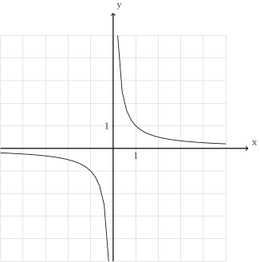
Cette fonction est bien partout continue ! Il ne fait pas sens d’affirmer qu’elle est discontinue en \(0\), puisqu’elle n’est même pas définie en \(0\).
Définition 2.1.6. Soit \(I\) un intervalle éventuellement privé d’un point. Soit \(f : I \to \mathbb{R}\).
On dit que \(f\) est une fonction continue si elle est continue en tous les points de son domaine de définition.
Exercice 2.1.7. Donner le domaine de définition des fonctions dont les graphes sont les suivants, puis déterminer si elles sont continues ou non. Si elles ne sont pas continues, donner l’ensemble des points où elles sont discontinues.
![\draw[step=1cm,gray,very thin] (-5,-5) grid (5,5);
\draw[very thick,->] (-5,0) -- (6,0) node[anchor=south west] {x};
\draw[very thick,->] (0,-5) -- (0,6) node[anchor=south west] {y};
\foreach \x in {1}
\draw (\x cm,1pt) -- (\x cm,-1pt) node[anchor=north] {$\x$};
\foreach \y in {1}
\draw (1pt,\y cm) -- (-1pt,\y cm) node[anchor=east] {$\y$};
\draw[thick] plot[domain=-4:2](\x,{-(\x)/2+1});
\draw[thick, fill=white](-4,3)circle(0.2);
\draw (2,0)node{$\bullet$};](_images/tikz-9408615725dc51e6f350eef2f0ff911a3f3d63a3.svg)
![\draw[step=1cm,gray,very thin] (-5,-5) grid (5,5);
\draw[very thick,->] (-5,0) -- (6,0) node[anchor=south west] {x};
\draw[very thick,->] (0,-5) -- (0,6) node[anchor=south west] {y};
\foreach \x in {1}
\draw (\x cm,1pt) -- (\x cm,-1pt) node[anchor=north] {$\x$};
\foreach \y in {1}
\draw (1pt,\y cm) -- (-1pt,\y cm) node[anchor=east] {$\y$};
\draw[thick] plot[domain=-4:0](\x,{-(\x)/2+1});
\draw[thick] plot[domain=0:2](\x,{-(\x)/2+2});
\draw[thick, fill=white](-4,3)circle(0.2);
\draw[thick, fill=white](2,1)circle(0.2);
\draw[thick, fill=white](0,1)circle(0.2);
\draw (0,2)node{$\bullet$};](_images/tikz-8a858ffdaa7b78358a9d403253c918257f6a1a67.svg)
![\draw[step=1cm,gray,very thin] (-5,-5) grid (5,5);
\draw[very thick,->] (-5,0) -- (6,0) node[anchor=south west] {x};
\draw[very thick,->] (0,-5) -- (0,6) node[anchor=south west] {y};
\foreach \x in {1}
\draw (\x cm,1pt) -- (\x cm,-1pt) node[anchor=north] {$\x$};
\foreach \y in {1}
\draw (1pt,\y cm) -- (-1pt,\y cm) node[anchor=east] {$\y$};
\draw[thick] plot[domain=-4:0](\x,{-(\x)/2+1});
\draw[thick] plot[domain=0:2](\x,{-(\x)/2-3});
\draw[thick, fill=white](-4,3)circle(0.2);
\draw (2,-4)node{$\bullet$};
\draw[thick, fill=white](0,1)circle(0.2);
\draw[thick, fill=white](0,-3)circle(0.2);](_images/tikz-9fddb8571480c0d0dae450fde9dc20a6e4bd4acb.svg)
![\draw[step=1cm,gray,very thin] (-5,-5) grid (5,5);
\draw[very thick,->] (-5,0) -- (6,0) node[anchor=south west] {x};
\draw[very thick,->] (0,-5) -- (0,6) node[anchor=south west] {y};
\foreach \x in {1}
\draw (\x cm,1pt) -- (\x cm,-1pt) node[anchor=north] {$\x$};
\foreach \y in {1}
\draw (1pt,\y cm) -- (-1pt,\y cm) node[anchor=east] {$\y$};
\draw[thick] plot[domain=-4:0](\x,{-(\x)/2+1});
\draw[thick] plot[domain=0:2](\x,{-(\x)/2-3});
\draw[thick, fill=white](-4,3)circle(0.2);
\draw (0,-2)node{$\bullet$};
\draw[thick, fill=white](2,-4)circle(0.2);
\draw[thick, fill=white](0,1)circle(0.2);
\draw[thick, fill=white](0,-3)circle(0.2);](_images/tikz-bd9c0fda01888ad4b19697254e110b97f829e014.svg)
![\draw[step=1cm,gray,very thin] (-5,-5) grid (5,5);
\draw[very thick,->] (-5,0) -- (6,0) node[anchor=south west] {x};
\draw[very thick,->] (0,-5) -- (0,6) node[anchor=south west] {y};
\foreach \x in {1}
\draw (\x cm,1pt) -- (\x cm,-1pt) node[anchor=north] {$\x$};
\foreach \y in {1}
\draw (1pt,\y cm) -- (-1pt,\y cm) node[anchor=east] {$\y$};
\draw[thick] plot[domain=-4:0](\x,{-(\x)/2+1});
\draw[thick] plot[domain=2:4](\x,{-(\x)/2+2});
\draw[thick, fill=white](-4,3)circle(0.2);
\draw[thick, fill=white](2,1)circle(0.2);
\draw[thick, fill=white](4,0)circle(0.2);
\draw[thick, fill=white](0,1)circle(0.2);](_images/tikz-6eae2592c455a5d16753e3a50ab2a022178132dd.svg)
![\draw[step=1cm,gray,very thin] (-5,-5) grid (5,5);
\draw[very thick,->] (-5,0) -- (6,0) node[anchor=south west] {x};
\draw[very thick,->] (0,-5) -- (0,6) node[anchor=south west] {y};
\foreach \x in {1}
\draw (\x cm,1pt) -- (\x cm,-1pt) node[anchor=north] {$\x$};
\foreach \y in {1}
\draw (1pt,\y cm) -- (-1pt,\y cm) node[anchor=east] {$\y$};
\draw[thick] plot[domain=-4:0](\x,{-(\x)/2+1});
\draw[thick] plot[domain=2:4](\x,{-(\x)/2+2});
\draw (-4,3)node{$\bullet$};
\draw (4,0)node{$\bullet$};
\draw (0,1)node{$\bullet$};
\draw[thick, fill=white](2,1)circle(0.2);](_images/tikz-3c188b9f4d66c1da02d18821d374532668d10341.svg)
![\draw[step=1cm,gray,very thin] (-5,-5) grid (5,5);
\draw[very thick,->] (-5,0) -- (6,0) node[anchor=south west] {x};
\draw[very thick,->] (0,-5) -- (0,6) node[anchor=south west] {y};
\foreach \x in {1}
\draw (\x cm,1pt) -- (\x cm,-1pt) node[anchor=north] {$\x$};
\foreach \y in {1}
\draw (1pt,\y cm) -- (-1pt,\y cm) node[anchor=east] {$\y$};
\draw[thick] plot[domain=-4:0](\x,{-(\x)/2+1});
\draw[thick] plot[domain=2:4](\x,{-(\x)/2+2});
\draw (2,1)node{$\bullet$};
\draw (4,0)node{$\bullet$};
\draw (0,1)node{$\bullet$};
\draw[thick, fill=white](-4,3)circle(0.2);](_images/tikz-7e799ca31ae9373242886b929764d163bcecbaac.svg)
![\draw[step=1cm,gray,very thin] (-5,-5) grid (5,5);
\draw[very thick,->] (-5,0) -- (6,0) node[anchor=south west] {x};
\draw[very thick,->] (0,-5) -- (0,6) node[anchor=south west] {y};
\foreach \x in {1}
\draw (\x cm,1pt) -- (\x cm,-1pt) node[anchor=north] {$\x$};
\foreach \y in {1}
\draw (1pt,\y cm) -- (-1pt,\y cm) node[anchor=east] {$\y$};
\draw[thick] plot[domain=-4:0](\x,{-(\x)/2+1});
\draw[thick] plot[domain=2:4](\x,{-(\x)/2+1});
\draw (2,1)node{$\bullet$};
\draw (4,-1)node{$\bullet$};
\draw (0,1)node{$\bullet$};
\draw (2,1)node{$\bullet$};
\draw[thick, fill=white](-4,3)circle(0.2);
\draw[thick, fill=white](2,0)circle(0.2);](_images/tikz-b0f99132dcfdf3aa880849465c56e846f412e077.svg)
![\draw[step=1cm,gray,very thin] (-5,-5) grid (5,5);
\draw[very thick,->] (-5,0) -- (6,0) node[anchor=south west] {x};
\draw[very thick,->] (0,-5) -- (0,6) node[anchor=south west] {y};
\foreach \x in {1}
\draw (\x cm,1pt) -- (\x cm,-1pt) node[anchor=north] {$\x$};
\foreach \y in {1}
\draw (1pt,\y cm) -- (-1pt,\y cm) node[anchor=east] {$\y$};
\draw[thick] plot[domain=-4:0](\x,{-(\x)/2+1});
\draw[thick] plot[domain=2:4](\x,{-(\x)/2+2});
\draw (2,1)node{$\bullet$};
\draw (0,1)node{$\bullet$};
\draw (1,2)node{$\bullet$};
\draw[thick, fill=white](-4,3)circle(0.2);
\draw[thick, fill=white](4,0)circle(0.2);](_images/tikz-0663c5d7b475be0795fa4960eda54477cc7f818d.svg)
![\draw[step=1cm,gray,very thin] (-5,-5) grid (5,5);
\draw[very thick,->] (-5,0) -- (6,0) node[anchor=south west] {x};
\draw[very thick,->] (0,-5) -- (0,6) node[anchor=south west] {y};
\foreach \x in {1}
\draw (\x cm,1pt) -- (\x cm,-1pt) node[anchor=north] {$\x$};
\foreach \y in {1}
\draw (1pt,\y cm) -- (-1pt,\y cm) node[anchor=east] {$\y$};
\draw (-4,-4)node{$\bullet$};
\draw[thick] plot[domain=-4:-1.1](\x,{-(\x+2)*(\x+2)});
\draw[thick, fill=white](-1,-1)circle(0.2);
\draw[thick] plot[domain=-0.9:-0.142](\x,{-1/(\x)-2});
\draw (0,-3)node{$\bullet$};
\draw[thick] plot[domain=0.142:1](\x,{1/(\x)-2});
\draw[thick, fill=white](1,-1)circle(0.2);
\draw (1,2.5)node{$\bullet$};
\draw[thick] plot[domain=1:2](\x,{-(\x)/2+3});
\draw[thick] plot[domain=2:2.875](\x,{1/(\x-3)+3});
\draw[thick] plot[domain=3.25:5](\x,{1/(\x-3)+1});](_images/tikz-62f1fda9f59b16de263e3e7ff896115abfbab153.svg)
Solution.
\(\mathop{\mathrm{dom}}(f) = ]-4,2]\). La fonction est continue.
\(\mathop{\mathrm{dom}}(f) = ]-4,2[\). La fonction est discontinue en \(0\).
\(\mathop{\mathrm{dom}}(f) = ]-4,0[ \cup ]0,2]\). La fonction est continue.
\(\mathop{\mathrm{dom}}(f) = ]-4,2[\). La fonction est discontinue en \(0\).
\(\mathop{\mathrm{dom}}(f) = ]-4,0[ \cup ]2,4[\). La fonction est continue.
\(\mathop{\mathrm{dom}}(f) = [-4,0] \cup ]2,4]\). La fonction est continue.
\(\mathop{\mathrm{dom}}(f) = ]-4,0] \cup [2,4]\). La fonction est continue.
\(\mathop{\mathrm{dom}}(f) = ]-4,0] \cup [2,4]\). La fonction est discontinue en \(2\).
\(\mathop{\mathrm{dom}}(f) = ]-4,0] \cup \{1\} \cup [2,4[\). La fonction est continue.
\(\mathop{\mathrm{dom}}(f) = [-4,-1[ \cup ]-1,3[ \cup ]3,+\infty[\). La fonction est discontinue en \(0\) et en \(1\).
2.2 Continuité des fonctions de référence¶
Théorème 2.2.1. Toutes les fonctions de référence sont continues.
Démonstration Pas en math 4. 1
Remarque 2.2.2. De toutes les fonctions de référence, seule la fonction inverse n’a pas un graphe qui peut être tracé d’un seul trait . À nouveau, il s’agit dans ce cas d’une question de domaine (la fonction inverse n’est pas définie en \(0\) puisqu’il ne fait pas sens de diviser par \(0\)) et non de continuité.
Exemple 2.2.3. Par exemple, la fonction racine cubique est continue :
![\draw[step=1cm,gray,very thin] (-5,-5) grid (5,5);
\draw[very thick,->] (-5,0) -- (6,0) node[anchor=south west] {x};
\draw[very thick,->] (0,-5) -- (0,6) node[anchor=south west] {y};
\foreach \x in {1}
\draw (\x cm,1pt) -- (\x cm,-1pt) node[anchor=north] {$\x$};
\foreach \y in {1}
\draw (1pt,\y cm) -- (-1pt,\y cm) node[anchor=east] {$\y$};
\draw[thick] plot[domain=0.01:5,samples=1000](\x,{(\x)^(1/3)});
\draw[thick] plot[domain=-5:-0.01,samples=1000](\x,{-(abs(\x))^(1/3)});](_images/tikz-65e7fafe95683d47de6cc8c3b8a5d8133e31c64a.svg)
2.3 Propriétés des fonctions continues¶
Commençons avec un exemple :
Exemple 2.3.1. Considérons les deux fonctions :
et
dont les graphes sont les suivants :
![\draw[step=1cm,gray,very thin] (-5,-5) grid (5,5);
\draw[very thick,->] (-5,0) -- (6,0) node[anchor=south west] {x};
\draw[very thick,->] (0,-5) -- (0,6) node[anchor=south west] {y};
\foreach \x in {1}
\draw (\x cm,1pt) -- (\x cm,-1pt) node[anchor=north] {$\x$};
\foreach \y in {1}
\draw (1pt,\y cm) -- (-1pt,\y cm) node[anchor=east] {$\y$};
\draw[thick,blue] plot[domain=1:3](\x,{-1+2*(\x-2)^(2)});
\draw[thick,red] plot[domain=1:3](\x,{1.5-(0.5)*(\x)});](_images/tikz-efdcee507cabba3f654670794fde0404a68f4108.svg)
![\draw[step=1cm,gray,very thin] (-5,-5) grid (5,5);
\draw[very thick,->] (-5,0) -- (6,0) node[anchor=south west] {x};
\draw[very thick,->] (0,-5) -- (0,6) node[anchor=south west] {y};
\foreach \x in {1}
\draw (\x cm,1pt) -- (\x cm,-1pt) node[anchor=north] {$\x$};
\foreach \y in {1}
\draw (1pt,\y cm) -- (-1pt,\y cm) node[anchor=east] {$\y$};
\draw[thick] plot[domain=1:3](\x,{-1+2*(\x-2)^(2)+1.5-(0.5)*(\x)});](_images/tikz-fd2f6b0afee4510951dc3eff467e38cf11c3e762.svg)
Sans surprise, aucune discontinuité n’est apparue. En additionnant deux fonctions continues, on a obtenu une nouvelle fonction continue. Ce n’est pas un hasard, comme l’indique la proposition suivante.
Proposition 2.3.2. Soit \(I\) un intervalle éventuellement privé d’un point. Soient \(f : I \to \mathbb{R}\) et \(g : I \to \mathbb{R}\) deux fonctions continues. Alors :
La fonction \(f+g : I \to \mathbb{R}\) est continue.
La fonction \(f-g : I \to \mathbb{R}\) est continue.
La fonction \(f.g : I \to \mathbb{R}\) est continue.
La fonction \(\frac{f}{g} : \{x \in I ~|~ g(x) \neq 0\} \to \mathbb{R}\) est continue.
Démonstration Pas en math 4. Voir annexe pour les curieux.
De manière éventuellement plus surprenante, la composée de deux fonctions continues (compatibles) est également toujours une fonction continue :
Proposition 2.3.3. Soit \(I,J\) deux intervalles. Soient \(f : I \to \mathbb{R}\) et \(g : J \to \mathbb{R}\) deux fonctions continues telle que \(\mathop{\mathrm{im}}(g) \subseteq I\). Alors : \(f \circ g : J \to \mathbb{R}\) est continue.
Démonstration Pas en math 4.
Une dernière opération qui conserve la continuité est la restriction :
Définition 2.3.4. Soit \(I\) un intervalle éventuellement privé d’un point. Soit \(f : I \to \mathbb{R}\). Soit \(A \subseteq I\). Alors la restriction de \(f\) sur \(A\) est la fonction :
\[\begin{split}\begin{aligned} f_{|A} : A &\to \mathbb{R}\\ x &\mapsto f(x) \end{aligned}\end{split}\]
Exemple 2.3.5. Soit la fonction :
\[\begin{split}\begin{aligned} f : [-4,3] &\to \mathbb{R}\\ x &\mapsto x+1 \end{aligned}\end{split}\]
dont le graphe est :
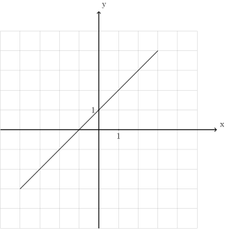
La restriction de \(f\) sur, par exemple, \([-4,-3[ \cup \{-2\} \cup [-1,1]\), est la fonction :
et son graphe est :
![\draw[step=1cm,gray,very thin] (-5,-5) grid (5,5);
\draw[very thick,->] (-5,0) -- (6,0) node[anchor=south west] {x};
\draw[very thick,->] (0,-5) -- (0,6) node[anchor=south west] {y};
\foreach \x in {1}
\draw (\x cm,1pt) -- (\x cm,-1pt) node[anchor=north] {$\x$};
\foreach \y in {1}
\draw (1pt,\y cm) -- (-1pt,\y cm) node[anchor=east] {$\y$};
\draw (-4,-3)node{$\bullet$};
\draw[thick] plot[domain=-4:-3.1](\x,{1+(\x)});
\draw (-2,-1)node{$\bullet$};
\draw[thick, fill=white](-3,-2)circle(0.2);
\draw (-1,0)node{$\bullet$};
\draw[thick] plot[domain=-1:1](\x,{1+(\x)});
\draw (1,2)node{$\bullet$};](_images/tikz-1bee850bec66fcd1f592a326a5373ca6868baab3.svg)
Comme annoncé, la restriction d’une fonction continue est toujours continue :
Proposition 2.3.6. Soit \(I\) un intervalle éventuellement privé d’un point. Soit \(f : I \to \mathbb{R}\) une fonction continue. Soit \(A \subseteq I\). Alors la restriction de \(f\) sur \(A\) est continue.
Démonstration Pas en math 4. Notons néanmoins que la démonstration est extrêment simple.
Grâce au théorème 2.2.1, nous savons que toutes les fonctions de référence sont continues. Or, les propositions 2.3.2, 2.3.3 et 2.3.6 nous disent que lorsqu’on combine deux fonctions continues selon une des opérations sur les fonctions les plus simples, nous pouvons être certains que le résultat est lui aussi une fonction continue. Ainsi, nous sommes à présent capables de justifier la continuité de nombreuses fonctions.
Exercice 2.3.7. Les fonctions suivantes sont-elles continues ? Si oui, justifier. Si non, faire le graphe de la fonction et donner l’ensemble des points de discontinuité.
- \[\begin{split}\begin{aligned} f : \mathbb{R}&\to \mathbb{R}\\ x &\mapsto 4x^2 + |x| \end{aligned}\end{split}\]
- \[\begin{split}\begin{aligned} f : \mathbb{R}&\to \mathbb{R}\\ x &\mapsto \sqrt[3]{3+x} \end{aligned}\end{split}\]
- \[\begin{split}\begin{aligned} f : {\mathbb{R}}_{0} &\to \mathbb{R}\\ x &\mapsto \frac{2}{x}+x \end{aligned}\end{split}\]
- \[\begin{split}\begin{aligned} f : ]-3,-2[ &\to \mathbb{R}\\ x &\mapsto \sqrt{-x} \end{aligned}\end{split}\]
- \[\begin{split}\begin{aligned} f : \mathbb{R}&\to \mathbb{R}\\ x &\mapsto \begin{cases} x+2 & \text{si } x \le 3 \\ -x^2+7 & \text{si } x > 3 \end{cases} \end{aligned}\end{split}\]
- \[\begin{split}\begin{aligned} f : {\mathbb{R}}_{0} &\to \mathbb{R}\\ x &\mapsto \begin{cases} 4 & \text{si } x < 0 \\ -\sqrt{x}+1 & \text{si } x > 0 \end{cases} \end{aligned}\end{split}\]
- \[\begin{split}\begin{aligned} f : [1,4] &\to \mathbb{R}\\ x &\mapsto \begin{cases} \frac{x^3 - 8}{x-2} & \text{si } x \neq 2 \\ 10 & \text{si } x = 2 \end{cases} \end{aligned}\end{split}\]
- \[\begin{split}\begin{aligned} f : ]-\infty,2] &\to \mathbb{R}\\ x &\mapsto \begin{cases} \frac{x^2 - 25}{x+5} & \text{si } x \neq -5 \\ -10 & \text{si } x = -5 \end{cases} \end{aligned}\end{split}\]
Solution.
La fonction \(f\) est continue. Justification :
Les fonctions
\[\begin{split}\begin{aligned} g : \mathbb{R}&\to \mathbb{R}\\ x &\mapsto x^2 \end{aligned}\end{split}\]\[\begin{split}\begin{aligned} h : \mathbb{R}&\to \mathbb{R}\\ x &\mapsto |x| \end{aligned}\end{split}\]\[\begin{split}\begin{aligned} l : \mathbb{R}&\to \mathbb{R}\\ x &\mapsto 4 \end{aligned}\end{split}\]sont continues (ce sont des fonctions de référence : voir théorème 2.2.1).
Or, \(f= l.g+h\), donc par la proposition 2.3.2, \(f\) est continue.
La fonction \(f\) est continue.
La fonction \(f\) est continue.
La fonction \(f\) est continue.
La fonction \(f\) n’est pas continue en \(3\).
La fonction \(f\) est continue.
La fonction \(f\) n’est pas continue en \(2\).
La fonction \(f\) est continue.
2.4 Grands théorèmes des fonctions continues (optionnel)¶
Théorème 2.4.1 (Théorème des valeurs intermédiaires). Soit \(I\) un intervalle de la forme \(I=[a,b]\). Soit \(f : I \to \mathbb{R}\) une fonction continue. Pour tout \(y \in \mathbb{R}\) compris entre \(f(a)\) et \(f(b)\), il existe \(x \in I\) tel que \(f(x) = y\).
Démonstration Pas en math 4. 2
Exemple 2.4.2. Considérons la fonction suivante qui est la restriction de la fonction carrée sur \([0,2]\).
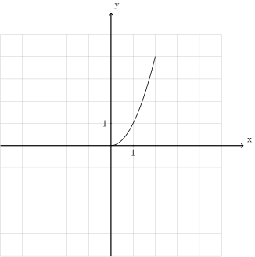
Puisque cette fonction est continue, \(f(0)=0\), \(f(2)=4\) et \(0 \le \pi \le 4\), on peut être certain qu’il existe une abscisse \(x\) entre \(0\) et \(2\) telle que la valeur de cette fonction en \(x\) vaut exactement \(\pi\) (dans ce cas-ci, il est possible de déterminer ce \(x\) (qui est ici unique) : \(\sqrt{\pi}\)).
Remarque 2.4.3. Le théorème n’affirme pas que l’abscisse \(x\) telle que \(f(x) = y\) est unique ! Comme le montre l’exemple suivant (où on choisit pour \(y\) l’ordonnée \(0\), qui se trouve entre \(f(-4)=-3\) et \(f(4)=3\)), il peut y avoir plusieurs abscisses de cette sorte :
![\draw[step=1cm,gray,very thin] (-5,-5) grid (5,5);
\draw[very thick,->] (-5,0) -- (6,0) node[anchor=south west] {x};
\draw[very thick,->] (0,-5) -- (0,6) node[anchor=south west] {y};
\foreach \x in {1}
\draw (\x cm,1pt) -- (\x cm,-1pt) node[anchor=north] {$\x$};
\foreach \y in {1}
\draw (1pt,\y cm) -- (-1pt,\y cm) node[anchor=east] {$\y$};
\draw[thick] plot[domain=-4:4](\x,{(1/16)*(\x-2)*(\x)*(\x+2)});
\draw (4,3)node{$\bullet$};
\draw (-4,-3)node{$\bullet$};](_images/tikz-a1aaa57b7d8264732cccf9b8a6c0aedff3fea056.svg)
La fonction vaut \(0\) en \(-2\), en \(0\) et en \(2\).
Théorème 2.4.4. Soit \(I\) un intervalle de la forme \(I=[a,b]\). Soit \(f : I \to \mathbb{R}\) une fonction continue. \(f\) est nécessairement bornée et atteint ses bornes, autrement dit \(f\) a un point de minimum et un point de maximum.
Démonstration Pas en math 4. 3
Remarque 2.4.5. Dans le prochain chapitre, nous nous intéresserons beaucoup aux (points de) minimum et maximum d’une fonction. Ce théorème des bornes atteintes nous dit que pour une fonction continue définie sur un intervalle fermé, nous pouvons être certain qu’un point de minimum et qu’un point de maximum existe, mais il ne nous dit pas comment les trouver.
Remarque 2.4.6. La fonction dont le graphe est ci-dessous est définie sur un intervalle de la forme \([a;b]\) et est continue :
![\draw[step=1cm,gray,very thin] (-5,-5) grid (5,5);
\draw[very thick,->] (-5,0) -- (6,0) node[anchor=south west] {x};
\draw[very thick,->] (0,-5) -- (0,6) node[anchor=south west] {y};
\foreach \x in {1}
\draw (\x cm,1pt) -- (\x cm,-1pt) node[anchor=north] {$\x$};
\foreach \y in {1}
\draw (1pt,\y cm) -- (-1pt,\y cm) node[anchor=east] {$\y$};
\draw[thick, samples=50] plot[domain=-2:2](\x,{(15/16)*(\x-2)*(\x)*(\x+2)});
\draw (2,0)node{$\bullet$};
\draw (-2,-0)node{$\bullet$};](_images/tikz-e77496762e501e9b6afa7b34f7dcb81ead4df0bf.svg)
Il s’agit de la fonction :
Nous serions bien incapables (à ce stade) de déterminer quel est le (point de) maximum et le (point de) minimum de cette fonction, mais nous sommes certains que ceux-ci existent bel et bien (visuellement, on les identifie immédiatement sans pour autant être capable de les déterminer exactement).
2.5 Prolongements continus¶
Exemple 2.5.1. Voici le graphe d’une fonction définie sur \([-4;4] \backslash \{1\}\) qui est continue :
![\draw[step=1cm,gray,very thin] (-5,-5) grid (5,5);
\draw[very thick,->] (-5,0) -- (6,0) node[anchor=south west] {x};
\draw[very thick,->] (0,-5) -- (0,6) node[anchor=south west] {y};
\foreach \x in {1}
\draw (\x cm,1pt) -- (\x cm,-1pt) node[anchor=north] {$\x$};
\foreach \y in {1}
\draw (1pt,\y cm) -- (-1pt,\y cm) node[anchor=east] {$\y$};
\draw (-4,-2.2)node{$\bullet$};
\draw[thick] plot[domain=-4:0.93,samples=50](\x,{-2.2-0.1*\x*(\x-2)*(\x+1)*sin(90*\x)});
\draw[thick, fill=white](1,-2)circle(0.176);
\draw[thick, fill=white](1,1)circle(0.176);
\draw[thick] plot[domain=1.13:4,samples=50](\x,{0.8-0.1*\x*(\x-2)*(\x+1)*sin(90*\x)});
\draw (4,0.8)node{$\bullet$};](_images/tikz-35894723d884c0bf03e4c85746960ff5eadd7519.svg)
Il ne fait pas sens de dire qu’elle est discontinue (ou continue) en \(1\) puisqu’elle n’est pas définie en \(1\).
Exemple 2.5.2. Voici le graphe d’une autre fonction définie sur \([-4;4] \backslash \{1\}\) qui est continue :
![\draw[step=1cm,gray,very thin] (-5,-5) grid (5,5);
\draw[very thick,->] (-5,0) -- (6,0) node[anchor=south west] {x};
\draw[very thick,->] (0,-5) -- (0,6) node[anchor=south west] {y};
\foreach \x in {1}
\draw (\x cm,1pt) -- (\x cm,-1pt) node[anchor=north] {$\x$};
\foreach \y in {1}
\draw (1pt,\y cm) -- (-1pt,\y cm) node[anchor=east] {$\y$};
\draw (-4,-2.2)node{$\bullet$};
\draw[thick] plot[domain=-4:0.93,samples=50](\x,{-2.2-0.1*\x*(\x-2)*(\x+1)*sin(90*\x)});
\draw[thick, fill=white](1,-2)circle(0.176);
\draw[thick] plot[domain=1.13:4,samples=50](\x,{-2.2-0.1*\x*(\x-2)*(\x+1)*sin(90*\x)});
\draw (4,-2.2)node{$\bullet$};](_images/tikz-bdde197ab8c43f5d5c1d018c783f2db2b5305bdc.svg)
Il ne fait pas sens de dire qu’elle est continue (ou discontinue) en \(1\) puisqu’elle n’est pas définie en \(1\).
Définition 2.5.3. Soit un intervalle \(I\) et soit \(c \in I\). Soit \(f : I \backslash \{c\} \to \mathbb{R}\).
Un prolongement continu de \(f\) sur \(I\) est une fonction \(g : I \to \mathbb{R}\) qui est continue (y compris en \(c\)) et telle que pour tout \(x \in I \backslash \{c\}\), on a \(g(x)=f(x)\).
Exemple 2.5.4. La fonction de l’exemple 2.5.1 ne possède pas de prolongement continu. Par contre, la fonction de l’exemple 2.5.2 possède un prolongement continu dont le graphe est le suivant :
![\draw[step=1cm,gray,very thin] (-5,-5) grid (5,5);
\draw[very thick,->] (-5,0) -- (6,0) node[anchor=south west] {x};
\draw[very thick,->] (0,-5) -- (0,6) node[anchor=south west] {y};
\foreach \x in {1}
\draw (\x cm,1pt) -- (\x cm,-1pt) node[anchor=north] {$\x$};
\foreach \y in {1}
\draw (1pt,\y cm) -- (-1pt,\y cm) node[anchor=east] {$\y$};
\draw (-4,-2.2)node{$\bullet$};
\draw[thick] plot[domain=-4:4,samples=100](\x,{-2.2-0.1*\x*(\x-2)*(\x+1)*sin(90*\x)});
\draw (4,-2.2)node{$\bullet$};](_images/tikz-8f2b0287ba76ff43bd4295656bbb15513e2de197.svg)
Dans le cas de cet exemple, puisque nous possédions déjà le graphe de la fonction, ce prolongement continu n’était pas très difficile à trouver.
Que signifie rigoureusement que la fonction \(f\) se rapproche d’une valeur lorsqu’on se rapproche de \(c\) ?
Comment savoir si la fonction \(f\) se rapproche bien d’une certaine valeur de manière uniforme et définitive lorsqu’on se rapproche de \(c\) ?
Si \(f\) se rapproche bien d’une certaine valeur de manière uniforme et définitive lorsqu’on se rapproche de \(c\), comment calculer cette valeur ?
Pour répondre à ces questions, nous avons besoin d’une nouvelle notion : celle de limite de fonction.
3 Limites de fonctions¶
3.1 Définition et exemples¶
Pour découvrir la notion de limite qui est la formalisation de l’idée intuitive se rapprocher de (de façon définitive et uniforme) , commençons avec un exemple :
Définition 3.1.1. Soit la fonction
Son graphe est le suivant :
![\draw[step=1cm,gray,very thin] (-5,-5) grid (5,5);
\draw[very thick,->] (-5,0) -- (6,0) node[anchor=south west] {x};
\draw[very thick,->] (0,-5) -- (0,6) node[anchor=south west] {y};
\foreach \x in {1}
\draw (\x cm,1pt) -- (\x cm,-1pt) node[anchor=north] {$\x$};
\foreach \y in {1}
\draw (1pt,\y cm) -- (-1pt,\y cm) node[anchor=east] {$\y$};
\draw[thick] plot[domain=0.05:1.5874](\x,{1+\x*\x*\x});
\draw[thick] plot[domain=-1.8171:-0.05](\x,{1+\x*\x*\x});
\draw[thick, fill=white](0,1)circle(0.15);
\draw (0,0)node{$\bullet$};](_images/tikz-bc03c0a556abdb0605037cc221328025821b059e.svg)
Au fur et à mesure que la variable \(x\) se rapproche de \(0\), de quelle valeur se rapproche \(f(x)\) ? Pour nous aider à y voir plus clair, évaluons la fonction \(f\) en plusieurs nombres qui se rapprochent de \(0\) :
|
|
Définition 3.1.2. Soit un intervalle \(I\) éventuellement privé d’un point \(c\). Soit \(f : I \to \mathbb{R}\).
On dit que \(f\) a une limite \(L \in \mathbb{R}\) en \(c\) si pour toute marge d’erreur \(\epsilon >0\), il existe \(\delta > 0\) tel que pour tout \(x \in I \backslash \{c\}\) qui est à une distance plus petite ou égale de \(c\) que \(\delta\), c’est-à-dire tel que \(|x-c| \le \delta\), on a nécessairement que \(f(x)\) est à une distance plus petite ou égale de \(L\) que \(\epsilon\), c’est-à-dire qu’on a \(|f(x)-L| \le \epsilon\). Dans ce cas, on note :
\[\lim\limits_{x \to c} f(x)=L\]
Exemple 3.1.3. La fonction
a comme limite \(1\) en \(0\). On note : \(\lim\limits_{x \to 0} f(x)=1\)
Remarque 3.1.4. Notons que dans l’exemple ci-dessus, la fonction \(f\) possède une limite en \(1\) qui vaut \(0\) mais est également définie en \(0\) de telle sorte que \(f(0)=0\). Il est important de comprendre qu’une limite d’une fonction en un point (si elle existe) n’est pas toujours égale à la valeur de la fonction en ce point (la fonction peut même ne pas être définie en ce point). C’est d’ailleurs tout l’intérêt de la notion de limite : elle permet de parler d’une valeur de laquelle se rapproche une fonction en un point sans que cette fonction ne soit jamais égale à cette valeur.
Voici à présent un théorème important mais que nous ne pourrons malheureusement pas démontrer :
Théorème 3.1.5. Soit un intervalle \(I\) éventuellement privé d’un point \(c\). Soit \(f : I \to \mathbb{R}\). Si \(f\) possède une limite en \(c\), alors cette limite est unique.
Il fait donc sens de parler de LA limite d’une fonction en un point. Ce théorème ne devrait pas vous surprendre : si on se rapproche de manière uniforme et définitive d’un endroit, on ne peut pas en même temps se rapprocher de manière uniforme et définitive d’un autre endroit.
Exemple 3.1.6. Soit la fonction carrée, dont le graphe est :
Exemple 3.1.7. Soit la fonction dont le graphe est :
![\draw[step=1cm,gray,very thin] (-5,-5) grid (5,5);
\draw[very thick,->] (-5,0) -- (6,0) node[anchor=south west] {x};
\draw[very thick,->] (0,-5) -- (0,6) node[anchor=south west] {y};
\foreach \x in {1}
\draw (\x cm,1pt) -- (\x cm,-1pt) node[anchor=north] {$\x$};
\foreach \y in {1}
\draw (1pt,\y cm) -- (-1pt,\y cm) node[anchor=east] {$\y$};
\draw[thick] plot[domain=-5:-3.05](\x,{\x});
\draw[thick] plot[domain=-2.95:4](\x,{1+\x});
\draw[thick, fill=white](-3,-3)circle(0.15);
\draw (-3,-2)node{$\bullet$};](_images/tikz-767622b1ff230813a541397c7909b6d962f1f202.svg)
Cette fonction ne possède pas de limite en \(-3\) : quand les \(x\) se rapprochent de \(-3\), les \(f(x)\) ne se rapprochent pas uniformément d’un unique nombre (ils se rapproche de \(-3\) par la gauche et de \(-2\) par la droite ).
Exemple 3.1.8. Soit la fonction dont le graphe est :
![\draw[step=1cm,gray,very thin] (-5,-5) grid (5,5);
\draw[very thick,->] (-5,0) -- (6,0) node[anchor=south west] {x};
\draw[very thick,->] (0,-5) -- (0,6) node[anchor=south west] {y};
\foreach \x in {1}
\draw (\x cm,1pt) -- (\x cm,-1pt) node[anchor=north] {$\x$};
\foreach \y in {1}
\draw (1pt,\y cm) -- (-1pt,\y cm) node[anchor=east] {$\y$};
\draw[thick] plot[domain=-5:3.95](\x,{2+0.25*\x*cos(180*\x)});
\draw[thick] plot[domain=4.05:5](\x,{2+0.25*\x*cos(180*\x)});
\draw[thick, fill=white](4,3)circle(0.15);](_images/tikz-5c49aa36de143db933938acb371393d053e01285.svg)
La fonction n’est pas définie en \(4\) mais elle possède néanmoins une limite en \(4\) : quand les \(x\) se rapprochent de \(4\), les \(f(x)\) se rapprochent uniformément et définitivement de \(3\). On note : \(\lim\limits_{x \to 2} f(x) = 3\)
Définition 3.1.9. Soit la fonction dont le graphe est :
![\draw[step=1cm,gray,very thin] (-5,-5) grid (5,5);
\draw[very thick,->] (-5,0) -- (6,0) node[anchor=south west] {x};
\draw[very thick,->] (0,-5) -- (0,6) node[anchor=south west] {y};
\foreach \x in {1}
\draw (\x cm,1pt) -- (\x cm,-1pt) node[anchor=north] {$\x$};
\foreach \y in {1}
\draw (1pt,\y cm) -- (-1pt,\y cm) node[anchor=east] {$\y$};
\draw[thick] plot[domain=0:1.95](\x,{sqrt(\x)});
\draw[thick] plot[domain=2.05:5](\x,{sqrt(\x)});
\draw[thick, fill=white](2,1.4142)circle(0.15);
\draw (2,-3)node{$\bullet$};](_images/tikz-0d60e6749c1dd8f022e11295dac0267c40a9925e.svg)
La fonction n’est pas définie en \(4\) mais elle possède néanmoins une limite en \(4\) : quand les \(x\) se rapprochent de \(4\), les \(f(x)\) se rapprochent uniformément et définitivement de \(3\). On note : \(\lim\limits_{x \to 2} f(x) = 3\)
Exercice 3.1.10. À l’aide d’un graphique, déterminer si les limites suivantes existent. Si oui, donner les valeurs de celles-ci.
|
|
Solution.
|
|
Exercice 3.1.11. Voici le graphe de la fonction \(f\). Déterminer si les limites suivantes existent. Si oui, donner les valeurs de celles-ci.
![\draw[step=1cm,gray,very thin] (-7,-3) grid (7,4);
\draw[very thick,->] (-7,0) -- (8,0) node[anchor=south west] {x};
\draw[very thick,->] (0,-3) -- (0,5) node[anchor=south west] {y};
\foreach \x in {1}
\draw (\x cm,1pt) -- (\x cm,-1pt) node[anchor=north] {$\x$};
\foreach \y in {1}
\draw (1pt,\y cm) -- (-1pt,\y cm) node[anchor=east] {$\y$};
\draw[thick] plot[domain=-7:-3,samples=100](\x,\x+5);
\draw[thick] plot[domain=-3:0,samples=100](\x,0.45*\x*\x-2);
\draw[thick] plot[domain=0:1.9457,samples=100](\x,{ln(1.95-\x)+2.3});
\draw[thick] plot[domain=2.0543:7,samples=100](\x,{ln(\x-2.05)+2.3});
\draw [thick] (-3,2) node[circle,fill=white,draw=black,inner sep=0.4mm] {};
\draw [thick] (0,-2) node[circle,fill=black,draw=black,inner sep=0.4mm] {};
\draw [thick] (0,3) node[circle,fill=white,draw=black,inner sep=0.4mm] {};](_images/tikz-f1cdefb8d1049ae5c79cf894336bd920140a1c4b.svg)
\(\lim\limits_{x\to -3} f(x)\)
\(\lim\limits_{x\to -2} f(x)\)
\(\lim\limits_{x\to 0} f(x)\)
\(\lim\limits_{x\to 2} f(x)\)
\(\lim\limits_{x\to 4} f(x)\)
Solution.
\(\lim\limits_{x\to -3} f(x)=2\)
\(\lim\limits_{x\to -2} f(x)=0\)
\(\lim\limits_{x\to 0} f(x)\) n’existe pas.
\(\lim\limits_{x\to 2} f(x)\) n’existe pas.
\(\lim\limits_{x\to 4} f(x)=4\)
Exercice 3.1.12. Tracer le graphe d’une fonction \(f\) définie sur \(\mathbb{R}\backslash \{-3;0\}\) qui n’a pas de limite en \(-3\) et qui a une limite en \(0\) qui vaut \(3\).
Solution.
![\draw[step=1cm,gray,very thin] (-5,-5) grid (5,5);
\draw[very thick,->] (-5,0) -- (6,0) node[anchor=south west] {x};
\draw[very thick,->] (0,-5) -- (0,6) node[anchor=south west] {y};
\foreach \x in {1}
\draw (\x cm,1pt) -- (\x cm,-1pt) node[anchor=north] {$\x$};
\foreach \y in {1}
\draw (1pt,\y cm) -- (-1pt,\y cm) node[anchor=east] {$\y$};
\draw[thick] plot[domain=-5:-3.05](\x,{-1*\x-1});
\draw[thick, fill=white](-3,2)circle(0.15);
\draw[thick, fill=white](-3,3)circle(0.15);
\draw[thick] plot[domain=-2.90:-0.05](\x,{3});
\draw[thick, fill=white](0,3)circle(0.15);
\draw[thick] plot[domain=0.09:5](\x,{-1*\x+3});](_images/tikz-fc1eb3f6ea5c48c202837f8f99f6ddaef410dc22.svg)
Exercice 3.1.13. Déterminer si les limites suivantes si elles existent.
|
|
![\draw[step=1cm,gray,very thin] (-4,-4) grid (4,4);
\draw[very thick,->] (-4,0) -- (5,0) node[anchor=south west] {x};
\draw[very thick,->] (0,-4) -- (0,5) node[anchor=south west] {y};
\foreach \x in {1}
\draw (\x cm,1pt) -- (\x cm,-1pt) node[anchor=north] {$\x$};
\foreach \y in {1}
\draw (1pt,\y cm) -- (-1pt,\y cm) node[anchor=east] {$\y$};
\draw[thick] plot[domain=-4:2,samples=100](\x,0.5*\x);
\draw[thick] plot[domain=2:4,samples=100](\x,-1.5*\x + 5);
\draw [thick] (2,1) node[circle,fill=white,draw=black,inner sep=0.4mm] {};
\draw [thick] (2,2) node[circle,fill=white,draw=black,inner sep=0.4mm] {};
\draw [thick] (2,-1) node[circle,fill=black,draw=black,inner sep=0.4mm] {};](_images/tikz-2679365a75bc9ca2b34f77e730ba1f8c03da5998.svg)
![\draw[step=1cm,gray,very thin] (-4,-4) grid (4,4);
\draw[very thick,->] (-4,0) -- (5,0) node[anchor=south west] {x};
\draw[very thick,->] (0,-4) -- (0,5) node[anchor=south west] {y};
\foreach \x in {1}
\draw (\x cm,1pt) -- (\x cm,-1pt) node[anchor=north] {$\x$};
\foreach \y in {1}
\draw (1pt,\y cm) -- (-1pt,\y cm) node[anchor=east] {$\y$};
\draw[thick] plot[domain=-4:-1,samples=100](\x,-\x-2);
\draw[thick] plot[domain=-1:1.98,samples=100](\x,{0.45*(\x*\x+2*\x+1)-1});
\draw [thick] (-1,-1) node[circle,fill=white,draw=black,inner sep=0.4mm] {};](_images/tikz-1cffbab23f96247fcddb101fef12815eee0cf6e7.svg)
![\draw[step=1cm,gray,very thin] (-4,-4) grid (4,4);
\draw[very thick,->] (-4,0) -- (5,0) node[anchor=south west] {x};
\draw[very thick,->] (0,-4) -- (0,5) node[anchor=south west] {y};
\foreach \x in {1}
\draw (\x cm,1pt) -- (\x cm,-1pt) node[anchor=north] {$\x$};
\foreach \y in {1}
\draw (1pt,\y cm) -- (-1pt,\y cm) node[anchor=east] {$\y$};
\draw[thick] plot[domain=-2.65:1,samples=100](\x,{0.3*(\x*\x-2*\x+1)-1});
\draw[thick] plot[domain=0.3:3.5,samples=100,xshift=25](\x,{1/\x});
\draw[dashed,thick] (1,-2) -- (1,3.3);
\draw [thick] (1,-1) node[circle,fill=white,draw=black,inner sep=0.4mm] {};](_images/tikz-bd32ceeb447ce58b5203a5bea748b3a897cc3b8a.svg)
![\draw[step=1cm,gray,very thin] (-4,-4) grid (4,4);
\draw[very thick,->] (-4,0) -- (5,0) node[anchor=south west] {x};
\draw[very thick,->] (0,-4) -- (0,5) node[anchor=south west] {y};
\foreach \x in {1}
\draw (\x cm,1pt) -- (\x cm,-1pt) node[anchor=north] {$\x$};
\foreach \y in {1}
\draw (1pt,\y cm) -- (-1pt,\y cm) node[anchor=east] {$\y$};
\draw[thick] plot[domain=-4.135:-0.499,samples=100,xshift=4](\x,{-1/(\x*\x)+2});
\draw[thick] plot[domain=0.577:4.27,samples=100,xshift=-8](\x,{-1/(\x*\x)+1});](_images/tikz-d66e520b0af18b37080c973d49388dd33afa0c45.svg)
![\draw[step=1cm,gray,very thin] (-4,-4) grid (4,4);
\draw[very thick,->] (-4,0) -- (5,0) node[anchor=south west] {x};
\draw[very thick,->] (0,-4) -- (0,5) node[anchor=south west] {y};
\foreach \x in {1}
\draw (\x cm,1pt) -- (\x cm,-1pt) node[anchor=north] {$\x$};
\foreach \y in {1}
\draw (1pt,\y cm) -- (-1pt,\y cm) node[anchor=east] {$\y$};
\draw[thick] plot[domain=-4:2,samples=100](\x,-1);
\draw[thick] plot[domain=2:4,samples=100](\x,2);
\draw [thick] (2,-1) node[circle,fill=white,draw=black,inner sep=0.4mm] {};
\draw [thick] (2,2) node[circle,fill=white,draw=black,inner sep=0.4mm] {};
\draw [thick] (2,1) node[circle,fill=black,draw=black,inner sep=0.4mm] {};](_images/tikz-1e4f0014cacba30c04275c6aa46ab0ccb19c5956.svg)
![\draw[step=1cm,gray,very thin] (-4,-4) grid (4,4);
\draw[very thick,->] (-4,0) -- (5,0) node[anchor=south west] {x};
\draw[very thick,->] (0,-4) -- (0,5) node[anchor=south west] {y};
\foreach \x in {1}
\draw (\x cm,1pt) -- (\x cm,-1pt) node[anchor=north] {$\x$};
\foreach \y in {1}
\draw (1pt,\y cm) -- (-1pt,\y cm) node[anchor=east] {$\y$};
\draw[thick] plot[domain=-4.48:-0.48,samples=100,xshift=13](\x,{-1/\x-0.1});
\draw[thick] plot[domain=0.48:4.48,samples=100,xshift=-13](\x,{-1/\x+2.1});
\draw [thick] (0,2) node[circle,fill=black,draw=black,inner sep=0.4mm] {};
\draw [thick] (0,0) node[circle,fill=white,draw=black,inner sep=0.4mm] {};](_images/tikz-e4e046416293a27844bb448d16a451943d8fb70c.svg)
Solution.
|
|
Exercice 3.1.14. Tracer le graphe d’une fonction \(f\) ayant les propriétés suivantes :
dom \(f=[-4,3] \backslash \{1;2\}\)
\(f\) est continue partout sauf en \(-2\).
\(f\) n’a pas de limite en \(-2\) et en \(2\)
\(f\) a une limite en \(-1\) qui vaut \(2\) et une limite en \(1\) qui vaut \(2\)
\(f(0)=3\) et \(f(-2)=1\)
\(f\) a exactement deux racines et elles se trouvent entre \(1\) et \(2\).
Solution.
![\draw[step=1cm,gray,very thin] (-5,-5) grid (5,5);
\draw[very thick,->] (-5,0) -- (6,0) node[anchor=south west] {x};
\draw[very thick,->] (0,-5) -- (0,6) node[anchor=south west] {y};
\foreach \x in {1}
\draw (\x cm,1pt) -- (\x cm,-1pt) node[anchor=north] {$\x$};
\foreach \y in {1}
\draw (1pt,\y cm) -- (-1pt,\y cm) node[anchor=east] {$\y$};
\draw (-4,-4)node{$\bullet$};
\draw[thick] plot[domain=-4:-2.05](\x,{\x});
\draw[thick, fill=white](-2,-2)circle(0.15);
\draw (-2,1)node{$\bullet$};
\draw[thick] plot[domain=-1.95:-0.05](\x,{1+0.5*(\x+2)*(\x+2)});
\draw (0,3)node{$\bullet$};
\draw[thick] plot[domain=0.05:0.95](\x,{-1*\x+3});
\draw[thick, fill=white](1,2)circle(0.15);
\draw[thick] plot[domain=1.09:1.95](\x,{(1+\x)*(cos(360*(\x-1)))});
\draw[thick, fill=white](2,3)circle(0.15);
\draw[thick, fill=white](2,-4)circle(0.15);
\draw[thick] plot[domain=2.09:3](\x,{-4});
\draw (3,-4)node{$\bullet$};](_images/tikz-4a2f52a1917e63ba7a38912f9b95e8043519e064.svg)
3.2 Lien entre la continuité et les limites de fonctions¶
Dans la section précédente, nous avons pu observer que dans certains cas, la limite d’une fonction en un point où cette fonction est définie existe et est simplement égale à la valeur de la fonction en ce point. Dans tous les cas observés, la fonction était justement définie et continue en ce point. Il ne s’agit pas d’un hasard.
Théorème 3.2.1. Soit un intervalle \(I\). Soit \(f : I \to \mathbb{R}\). Soit \(c \in I\). Alors \(f\) est continue en \(c\) si et seulement si \(f\) a une limite en \(c\) et \(\lim\limits_{x \to c} f(x) =f(c)\).
Malheureusement, la démonstration de ce théorème sort du cadre de ce cours.
Remarque 3.2.2. Il est vraiment dommage que nous ne puissions pas nous attarder sur la démonstration de ce théorème. En effet, celui-ci permet de relier la continuité aux limites, dont les définitions se ressemblent. Cette ressemblance n’est pas anodine : historiquement, ces deux notions ont été développées parallèlement et les mêmes idées ont été utilisées de part et d’autre pour arriver aux définitions actuelles.
Nous pouvons néanmoins expliquer brièvement la démonstration du théorème à partir de nos intuitions. Si une fonction est continue en un point, cela correspond au fait que son graphe ne possède pas de saut vertical en ce point, autrement dit que je peux approcher autant que je le souhaite la valeur de cette fonction en ce point à condition d’être assez proche de ce point. On retrouve assez directement l’intuition de limite : si les abscisses du graphe de la fonction se rapprochent du point considéré, les ordonnées se rapprochent donc nécessairement de l’image de ce point par la fonction, autrement dit la limite de la fonction en ce point est égale à l’image de la fonction en ce point. L’autre sens de la démonstration est tout aussi intuitif.
Avec ce théorème, nous pouvons calculer des limites de certaines fonctions sans pour autant pouvoir/devoir réaliser leurs graphes ! Donnons immédiatement un exemple.
Exemple 3.2.3. Soit la fonction
Supposons qu’on souhaite calculer la limite de cette fonction en \(8\). Cette fonction est continue car c’est la somme de deux fonctions de référence (la fonction cubique et la fonction racine cubique) qui sont continues. Par le théorème 3.2.1, puisque \(f\) est bien définie et continue en \(2\), on peut donc affirmer que la limite \(\lim\limits_{x \to 2}\) existe et vaut \(f(8)=8^3+\sqrt[3]{8}=514\).
Exercice 3.2.4. Calculer les limites suivantes et justifier.
\(\lim\limits_{x \to 2} \sqrt{x}+1\)
\(\lim\limits_{x \to \frac{-1}{\pi}} 1+\frac{1}{x}\)
\(\lim\limits_{x \to 3} \frac{x^2-9}{x+3}\)
\(\lim\limits_{x \to 1} \sqrt{x^2+\sqrt[3]{(5x)^2+|x-3|}}\)
Solution.
\(\lim\limits_{x \to 2} \sqrt{x}+1=\sqrt{2}+1\). Justification : la fonction racine carrée et la fonction constante \(1\) sont continues en \(2\), donc leur somme est continue en \(2\). Dès lors, par le théorème 3.2.1, on a \(\lim\limits_{x \to 2} \sqrt{x}+1=\sqrt{2}+1\).
\(\lim\limits_{x \to \frac{-1}{\pi}} 1+\frac{1}{x}=1-\pi\)
\(\lim\limits_{x \to 3} \frac{x^2-9}{x+3}=0\)
\(\lim\limits_{x \to 1} \sqrt{x^2+\sqrt[3]{(5x)^2+|x-3|}}=2\)
3.3 Lien entre les prolongements continus et les limites de fonctions¶
Dans la section précédente, nous avons vu que calculer la limite d’une fonction en un point où elle est définie et continue est on ne peut plus simple. Mais qu’en est-il si on veut calculer la limite d’une fonction en un point où elle n’est pas définie ? Commençons avec un exemple.
Exemple 3.3.1.
Considérons la fonction :
\[\begin{split}\begin{aligned} f : \mathbb{R}\backslash \{2\} &\to \mathbb{R}\\ x &\mapsto \frac{x^2-4x+4}{x-2} \end{aligned}\end{split}\]Cette fonction n’est pas définie en \(2\) mais on pourrait se demander si elle possède malgré tout une limite en \(2\). Malheureusement, nous ne pouvons pas invoquer le théorème 3.2.1 pour cette éventuelle limite puisque bien que la fonction soit continue partout sur son domaine de définition, elle n’est pas définie en \(2\). Si nous pouvions trouver un prolongement continu de cette fonction défini en \(2\), nous pourrions aisément calculer cette limite en appliquant le théorème 3.2.1. En fait, l’existence de ce prolongement continu correspond précisément à l’existence de la limite que nous recherchons et la valeur de cet éventuel prolongement continu en \(2\) est précisément la valeur de la limite recherchée ? Dès lors, comment déterminer si la fonction \(f\) possède un prolongement continu en \(2\) ? Pour ce faire, jouons un peu avec l’expression de \(f\) et simplifions. Pour tout \(x \in \mathbb{R}\backslash \{2\}\) :
\[\frac{x^2-4x+4}{x-2}=\frac{(x-2)^2}{x-2}=x-2\]Pour tout \(x \in \mathbb{R}\backslash \{2\}\), nous avons donc \(f(x)=x-2\). Attention néanmoins : cette égalité est valable seulement si \(x \neq 2\). Elle n’a pas de sens si \(x=2\).
Malgré cela, remarquons que l’expression \(x-2\) fait sens même si \(x=2\) : \(2-2=0\). Autrement dit, si on pose :
\[\begin{split}\begin{aligned} g : \mathbb{R}&\to \mathbb{R}\\ x &\mapsto x-2 \end{aligned}\end{split}\]La fonction \(g\) est définie partout même en \(2\), est continue (y compris en \(2\)) et est telle que pour tout \(x \in \mathbb{R}\backslash \{2\}\) : \(g(x)=f(x)\). Il s’agit d’un prolongement continu de \(f\) !
Pour la fonction \(g\), nous pouvons appliquer le théorème 3.2.1 : \(\lim\limits_{x \to 2} g(x)=g(2)=2-2=0\). Or, comme pour tout \(x \in \mathbb{R}\backslash \{2\}\) : \(g(x)=f(x)\), on a donc :
\[\lim\limits_{x \to 2} f(x) = \lim\limits_{x \to 2} g(x) =0\]En conclusion, la limite que nous recherchions existe et vaut \(0\).
Dans l’exemple ci-dessus, nous avons relié l’existence d’une limite en un point où une fonction n’était pas définie à l’existence d’un prolongement continu de cette fonction en ce point. Nous avons vu qu’un tel prolongement continu existait et que sa valeur au point où la fonction initiale n’était pas définie correspondant précisément à la valeur recherchée. Ce n’est pas un hasard :
Théorème 3.3.2. Soit un intervalle \(I\). Soit \(c \in I\). Soit \(f : I \backslash \{c\} \to \mathbb{R}\).
Alors \(f\) admet une limite en \(c\) si et seulement si \(f\) admet un prolongement continu en \(c\). De plus, si la valeur de cette éventuelle limite est égale à l’image de cet éventuel prolongement continu en \(c\).
Une fois de plus, nous ne pouvons malheureusement pas démontrer ce théorème dans ce cours. Mais à ce stade, celui-ci ne devrait pas vous surprendre. En effet, la notion de limite est précisément l’outil dont nous avions besoin pour répondre aux trois questions finales de la section 2.5. Grâce au théorème 3.3.2, nous pouvons à présent calculer des limites un peu moins triviales que celles que nous avons calculées dans la section précédente. En effet, lorsqu’on souhaite calculer la limite d’une fonction en un point où elle n’est pas défini, il suffit donc de rechercher un prolongement continu de cette fonction, ce qui peut se faire en manipulant et en simplifiant son expression.
Exercice 3.3.3. Les limites suivantes existent. Calculer celles-ci.
|
|
Solution.
- \(\lim\limits_{x \to -1} \frac{x^2-1}{x+1}=-2\).
Justification : pour tout \(x \in \mathbb{R}\backslash \{-1\}\), on a \(f(x)= \frac{x^2-1}{x+1}=\frac{(x-1)(x+1)}{x+1}=x-1\). La fonction :
\[\begin{split}\begin{aligned} g : \mathbb{R}&\to \mathbb{R}\\ x &\mapsto x-1 \end{aligned}\end{split}\]est donc un prolongement continu de \(f\). Comme \(g(-1)=-2\), par le théorème [pcl], on a donc \(\lim\limits_{x \to -1} \frac{x^2-1}{x+1}=-2\).
\(\lim\limits_{x \to 0} 1+\frac{3x^2+x}{x}=2\)
\(\lim\limits_{x \to 4} \frac{x^2-8x+16}{x^2-16}=0\)
\(\lim\limits_{x \to 0} \frac{x^2+x}{\sqrt{x}}=0\)
\(\lim\limits_{x \to 1} \frac{-x^4+x^2+x-1}{2-2x}=\frac{1}{2}\)
\(\lim\limits_{x \to 2} \frac{x^4+x^3-8x-8}{x^3-8}=3\)
\(\lim\limits_{x \to 2} \frac{x-1}{x+2}+\frac{3x-6}{x^2-4}=1\)
\(\lim\limits_{x \to 4} \frac{4-x}{2-\sqrt{x}}=4\)
Remarque 3.3.4. Certaines personnes (pour être honnête : de nombreuses personnes) peu rigoureuses appliquent parfois la conclusion du théorème 3.2.1 même dans des cas où cette application n’est pas légitime, par exemple quand la fonction dont ils veulent calculer la limite n’est pas définie au point où ils veulent déterminer l’éventuelle limite. Pour donner un exemple précis, ces personnes écrivent :
Ces personnes appellent alors ce genre de situation une indétermination .
Je vous interdis de faire de même dans ce cours.
Ce type de pratique est non rigoureuse et illogique (on applique un théorème alors que les hypothèses de ce théorème ne sont pas respectées), dangereuse (cela nuit à la compréhension de l’idée de limite (et d’infini) et fait écrire des suites de symboles qui n’ont pas de sens) et inutile (de nombreux mathématiciens dans le monde calculent des limites très efficacement sans avoir besoin d’écrire de telles horreurs). Plutôt que de ne pas réfléchir et d’écrire de façon automatique des choses qui n’ont pas de sens, prenez toujours le temps de vérifier si les hypothèses des résultats que vous souhaitez invoquer sont vérifiées et d’être certain de comprendre ce que vous êtes en train de faire.
3.4 Divergence de fonctions en un point¶
Exemple 3.4.1. Considérons la fonction :
dont voici le graphe :
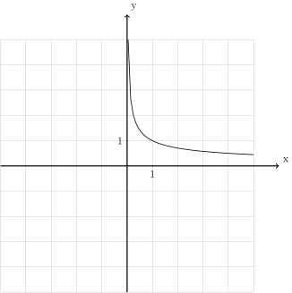
Que se passe-t-il quand les \(x\) se rapprochent de \(0\) ? Les \(f(x)\) ne se rapprochent certainement pas d’un nombre réel ! Si on teste avec certaines valeurs de \(x\) qui se rapprochent de \(0\), on constate immédiatement que les \(f(x)\) deviennent de plus en plus grands :
On remarque même qu’à condition de se rapprocher suffisament de \(0\), les valeurs de la fonction deviendront aussi grandes que l’on veut. Autrement dit, on peut se donner n’importe quelle borne supérieure, les valeurs \(f(x)\) de cette fonction dépassent par le haut cette borne supérieure de façon uniforme et définitive à condition de choisir des \(x\) suffisament proche de \(0\). Ce comportement est appelé divergence (vers \(+\infty\)) et nous venons d’en donner la définition intuitive.
Donnons à présent la définition rigoureuse de divergence (vers \(+\infty\)).
Définition 3.4.2. Soit un intervalle \(I\) éventuellement privé d’un point \(c\). Soit \(f : I \to \mathbb{R}\).
On dit que \(f\) diverge (vers \(+\infty\)) en \(c\) si pour toute borne supérieure \(M >0\), il existe \(\delta > 0\) tel que pour tout \(x \in I \backslash \{c\}\) qui est à une distance plus petite ou égale de \(c\) que \(\delta\), c’est-à-dire tel que \(|x-c| \le \delta\), on a nécessairement que \(f(x)\) est plus grand ou égal à \(M\), c’est-à-dire que \(f(x)\ge M\). Dans ce cas, on note :
\[\lim\limits_{x \to c} f(x)=+\infty\]
Remarque 3.4.3. Attention : cette remarque est extrêmement importante.
Lorsqu’une fonction diverge (vers \(+\infty\)) en un point, elle n’a pas de limite en ce point. Diverger vers \(+\infty\) ne signifie pas se rapprocher d’un nombre appelé \(+\infty\) (\(+\infty\) n’est pas un nombre réel). On utilise pourtant la même notation pour parler de limite et de divergence : cela est extrêmement malheureux et absolument pas pédagogique. Cette notation étant néanmoins utilisée par tous, nous l’utiliserons également.
Exemple 3.4.4. La fonction
dont le graphe est :
![\draw[step=1cm,gray,very thin] (-5,-5) grid (5,5);
\draw[very thick,->] (-5,0) -- (6,0) node[anchor=south west] {x};
\draw[very thick,->] (0,-5) -- (0,6) node[anchor=south west] {y};
\foreach \x in {1}
\draw (\x cm,1pt) -- (\x cm,-1pt) node[anchor=north] {$\x$};
\foreach \y in {1}
\draw (1pt,\y cm) -- (-1pt,\y cm) node[anchor=east] {$\y$};
\draw[thick] plot[domain=-5:-0.44721](\x,{1/(\x*\x)});
\draw[thick] plot[domain=0.44721:5](\x,{1/(\x*\x)});](_images/tikz-65b3849de5b773311653e8a224786277190f88e0.svg)
diverge vers \(+\infty\) en \(0\). On note : \(\lim\limits_{x \to 0} \frac{1}{x^2}=+\infty\).
Il existe un autre phénomène possible lorsqu’une fonction ne converge pas en un point, très semblable à la divergence vers \(+\infty\) : il s’agit de la divergence vers \(-\infty\). Pour l’introduire, commençons avec un exemple.
Exemple 3.4.5. Considérons la fonction
dont le graphe est :
![\draw[step=1cm,gray,very thin] (-5,-5) grid (5,5);
\draw[very thick,->] (-5,0) -- (6,0) node[anchor=south west] {x};
\draw[very thick,->] (0,-5) -- (0,6) node[anchor=south west] {y};
\foreach \x in {1}
\draw (\x cm,1pt) -- (\x cm,-1pt) node[anchor=north] {$\x$};
\foreach \y in {1}
\draw (1pt,\y cm) -- (-1pt,\y cm) node[anchor=east] {$\y$};
\draw[thick] plot[domain=-5:0.8](\x,{1/(abs(\x -1))});
\draw[thick] plot[domain=1.2:5](\x,{1/(abs(\x -1))});](_images/tikz-ed87d47f35cc58abb9d35b168da7d01da5f0671e.svg)
Que se passe-t-il quand les \(x\) se rapprochent de \(1\) ? À nouveau, les \(f(x)\) ne se rapprochent certainement pas d’un nombre réel ! Si on teste avec certaines valeurs de \(x\) qui se rapprochent de \(1\), on constate immédiatement que les \(f(x)\) deviennent de plus en plus grands négativement :
On remarque même qu’à condition de se rapprocher suffisament de \(1\), les valeurs de la fonction deviendront aussi grandes négativement que l’on veut. Autrement dit, on peut se donner n’importe quelle borne inférieure, les valeurs \(f(x)\) de cette fonction dépassent par le bas cette borne supérieure de façon uniforme et définitive à condition de choisir des \(x\) suffisament proche de \(1\). Ce comportement est appelé divergence (vers \(-\infty\)) et nous venons d’en donner la définition intuitive.
Donnons à présent la définition rigoureuse de divergence (vers \(-\infty\)).
Définition 3.4.6. Soit un intervalle \(I\) éventuellement privé d’un point \(c\). Soit \(f : I \to \mathbb{R}\).
On dit que \(f\) diverge (vers \(-\infty\)) en \(c\) si pour toute borne supérieure \(M >0\), il existe \(\delta > 0\) tel que pour tout \(x \in I \backslash \{c\}\) qui est à une distance plus petite ou égale de \(c\) que \(\delta\), c’est-à-dire tel que \(|x-c| \le \delta\), on a nécessairement que \(f(x)\) est plus grand ou égal à \(M\), c’est-à-dire tel que \(f(x)\le M\). Dans ce cas, on note :
\[\lim\limits_{x \to c} f(x)=-\infty\]
Remarque 3.4.7. Même remarque que pour la divergence vers \(+\infty\) : diverger vers \(-\infty\) ne signifie pas avoir comme limite un nombre appelé \(-\infty\).
Exemple 3.4.8. La fonction
dont le graphe est :
![\draw[step=1cm,gray,very thin] (-5,-8) grid (8,5);
\draw[very thick,->] (-5,0) -- (9,0) node[anchor=south west] {x};
\draw[very thick,->] (0,-8) -- (0,6) node[anchor=south west] {y};
\foreach \x in {1}
\draw (\x cm,1pt) -- (\x cm,-1pt) node[anchor=north] {$\x$};
\foreach \y in {1}
\draw (1pt,\y cm) -- (-1pt,\y cm) node[anchor=east] {$\y$};
\draw[thick] plot[samples=50,domain=2.01563:8](\x,{-1/(sqrt(\x - 2))});](_images/tikz-d0ae3ac4bda14a976a837bb5485560724448360c.svg)
diverge vers \(-\infty\) en \(2\). On note : \(\lim\limits_{x \to 2} \frac{-1}{\sqrt{x-2}}=-\infty\).
- Si une fonction converge (a une limite) en un point, ses valeurs ne peuvent pas devenir arbitrairement grandes (que ce soit positivement ou négativement) puisque qu’elle se rapproche de la limite (qui est un nombre réel).
Si une fonction diverge vers \(+\infty\) en un point, ses valeurs ne peuvent se rapprocher d’un nombre réel (puisque celles-ci deviennent de plus en plus grandes positivement au fur et à mesure qu’on se rapproche du point où la fonction diverge) et ne peuvent devenir arbitrairement grandes négativement (puisque celles-ci deviennent de plus en plus grandes positivement au fur et à mesure qu’on se rapproche du point où la fonction diverge).
Si une fonction diverge vers \(-\infty\) en un point, ses valeurs ne peuvent se rapprocher d’un nombre réel (puisque celles-ci deviennent de plus en plus grandes négativement au fur et à mesure qu’on se rapproche du point où la fonction diverge) et ne peuvent devenir arbitrairement grandes négativement (puisque celles-ci deviennent de plus en plus grandes négativement au fur et à mesure qu’on se rapproche du point où la fonction diverge).
Proposition 3.4.9. Soit un intervalle \(I\) éventuellement privé d’un point \(c\). Soit \(f : I \to \mathbb{R}\).
Si \(f\) possède une limite en \(c\), alors \(f\) ne diverge pas vers \(+\infty\) en \(c\) et ne diverge pas vers \(-\infty\) en \(c\).
Si \(f\) diverge vers \(+\infty\) en \(c\), alors \(f\) ne possède pas une limite en \(c\) et ne diverge pas vers \(-\infty\) en \(c\).
Si \(f\) diverge vers \(-\infty\) en \(c\), alors \(f\) ne possède pas une limite en \(c\) et ne diverge pas vers \(+\infty\) en \(c\).
Contre-exemple 3.4.10. Les seules fonctions de référence qui ne sont pas définies sur tout \(\mathbb{R}\) sont la fonction racine carrée et la fonction inverse. Nous savons déjà que la fonction racine carrée a comme limite \(0\) lorsque \(x\) tend vers \(0\), mais qu’en est-il de la fonction inverse ? Diverge-t-elle ? Rappelons que la fonction inverse est la fonction :
Son graphe est le suivant.
![\draw[step=1cm,gray,very thin] (-5,-5) grid (5,5);
\draw[very thick,->] (-5,0) -- (6,0) node[anchor=south west] {x};
\draw[very thick,->] (0,-5) -- (0,6) node[anchor=south west] {y};
\foreach \x in {1}
\draw (\x cm,1pt) -- (\x cm,-1pt) node[anchor=north] {$\x$};
\foreach \y in {1}
\draw (1pt,\y cm) -- (-1pt,\y cm) node[anchor=east] {$\y$};
\draw[thick] plot[domain=-5:-0.2](\x,{1/(\x)});
\draw[thick] plot[domain=0.2:5](\x,{1/(\x)});](_images/tikz-07e263c507d9e9dfeb9cf2f9cccd3868463343bf.svg)
Lorsque les \(x \in {\mathbb{R}}_{0}\) se rapprochent de \(0\), les nombres \(\frac{1}{x}\) ne se rapprochent certainement pas d’un nombre de manière uniforme et définitive. Mais ils ne deviennent pas non plus arbitrairement grands positivement de manière uniforme et définitive (ils le deviennt à droite de \(0\), mais pas à gauche ) et ils ne deviennent pas non plus arbitrairement grands négativement de manière uniforme et définitive (ils le deviennt à gauche de \(0\), mais pas à droite ). En conclusion, la fonction inverse n’a pas de limite en \(0\), mais ne diverge pas non plus en \(0\) (que ce soit vers \(+\infty\) ou vers \(-\infty\)).
Remarque 3.4.11. La fonction inverse ne diverge pas vers \(+\infty\) ou vers \(-\infty\) en \(0\), mais par contre son produit avec elle-même diverge vers \(+\infty\) en \(0\) : voir exemple 3.4.4.
Exemple 3.4.12. La fonction \(f : \mathbb{R}\backslash \{-1\} \to \mathbb{R}\) dont le graphe est le suivant :
![\draw[step=1cm,gray,very thin] (-5,-5) grid (5,5);
\draw[very thick,->] (-5,0) -- (6,0) node[anchor=south west] {x};
\draw[very thick,->] (0,-5) -- (0,6) node[anchor=south west] {y};
\foreach \x in {1}
\draw (\x cm,1pt) -- (\x cm,-1pt) node[anchor=north] {$\x$};
\foreach \y in {1}
\draw (1pt,\y cm) -- (-1pt,\y cm) node[anchor=east] {$\y$};
\draw[thick] plot[domain=-5:-1.125](\x,{-3-1/(\x +1)});
\draw[thick] plot[samples=50,domain=-0.993:5](\x,{-1*ln(\x+1)});](_images/tikz-c0ab49f21a95916edd01baac533029ee8e2dfa53.svg)
diverge vers \(+\infty\) en \(-1\). On note : \(\lim\limits_{x \to 0} f(x) = -\infty\).
Exemple 3.4.13. La fonction \(f : [0;+\infty[ \to \mathbb{R}\) dont le graphe est le suivant :
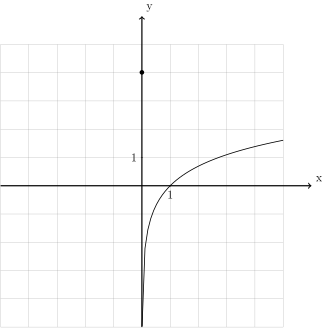
diverge vers \(-\infty\) en \(0\) (même si la fonction est définie en \(0\) de telle sorte que \(f(0)=4\)). On note : \(\lim\limits_{x \to 0} f(x) = -\infty\).
Contre-exemple 3.4.14. La fonction \(f : \mathbb{R}\to \mathbb{R}\) dont le graphe est le suivant :
![\draw[step=1cm,gray,very thin] (-5,-5) grid (5,5);
\draw[very thick,->] (-5,0) -- (6,0) node[anchor=south west] {x};
\draw[very thick,->] (0,-5) -- (0,6) node[anchor=south west] {y};
\foreach \x in {1}
\draw (\x cm,1pt) -- (\x cm,-1pt) node[anchor=north] {$\x$};
\foreach \y in {1}
\draw (1pt,\y cm) -- (-1pt,\y cm) node[anchor=east] {$\y$};
\draw[thick] plot[domain=-5:-1.125](\x,{-3-1/(\x +1)});
\draw[thick] plot[samples=50,domain=-0.993:5](\x,{ln(\x+1)});
\draw (-1,0)node{$\bullet$};](_images/tikz-99bc3c01f27d4c447510a54acae7adfe954f692d.svg)
ne converge pas et ne diverge pas en \(-1\).
Contre-exemple 3.4.15. La fonction \(f : \mathbb{R}\backslash \{0\} \to \mathbb{R}\) dont le graphe est le suivant :
![\draw[step=1cm,gray,very thin] (-5,-5) grid (5,5);
\draw[very thick,->] (-5,0) -- (6,0) node[anchor=south west] {x};
\draw[very thick,->] (0,-5) -- (0,6) node[anchor=south west] {y};
\foreach \x in {1}
\draw (\x cm,1pt) -- (\x cm,-1pt) node[anchor=north] {$\x$};
\foreach \y in {1}
\draw (1pt,\y cm) -- (-1pt,\y cm) node[anchor=east] {$\y$};
\draw[thick] plot[samples=50,domain=0.007:5](\x,{ln(\x)});
\draw (0,3.5)node{$\bullet$};
\draw[thick] plot[domain=-5:0](\x,{3.5});](_images/tikz-77b3cf86e9b397111b3740d36f8fdcd826506c29.svg)
ne converge pas et ne diverge pas en \(0\).
À présent, exerçons-nous un peu.
Exercice 3.4.16. À l’aide d’un graphique, déterminer si les fonctions divergent au point considéré. Si oui, donner le type de divergence (vers \(+\infty\) ou vers \(-\infty\)).
Solution.
Exercice 3.4.17. Voici le graphe d’une fonction réelle \(f\). Déterminer l’ensemble des points où elle diverge.
Solution. L’unique point où la fonction diverge est \(2\). On a \(\lim\limits_{x \to 2} f(x)=-\infty\).
Exercice 3.4.18. Tracer le graphe d’une fonction \(f\) définie sur \(\mathbb{R}\backslash \{-2;0\}\) qui diverge vers \(-\infty\) en \(-2\) et qui ne diverge et ne converge pas en \(0\).
Solution.
![\draw[step=1cm,gray,very thin] (-5,-5) grid (5,5);
\draw[very thick,->] (-5,0) -- (6,0) node[anchor=south west] {x};
\draw[very thick,->] (0,-5) -- (0,6) node[anchor=south west] {y};
\foreach \x in {1}
\draw (\x cm,1pt) -- (\x cm,-1pt) node[anchor=north] {$\x$};
\foreach \y in {1}
\draw (1pt,\y cm) -- (-1pt,\y cm) node[anchor=east] {$\y$};
\draw[thick] plot[domain=-5:-2.3536](\x,{3-1/((\x+2)*(\x+2))});
\draw[thick] plot[domain=-1.4453:-0.05](\x,{-1.75-1/((\x+2)*(\x+2))});
\draw[thick, fill=white](0,-2)circle(0.15);
\draw[thick] plot[domain=0.2:5](\x,{1/(\x)});](_images/tikz-456543a2f7add12f7d7028764404277e753f4484.svg)
Exercice 3.4.19. Déterminer si les fonctions dont les graphes sont donnés ci-dessous divergent aux points indiqués.
|
|
![\draw[step=1cm,gray,very thin] (-4,-4) grid (4,4);
\draw[very thick,->] (-4,0) -- (5,0) node[anchor=south west] {x};
\draw[very thick,->] (0,-4) -- (0,5) node[anchor=south west] {y};
\foreach \x in {1}
\draw (\x cm,1pt) -- (\x cm,-1pt) node[anchor=north] {$\x$};
\foreach \y in {1}
\draw (1pt,\y cm) -- (-1pt,\y cm) node[anchor=east] {$\y$};
\draw[thick] plot[domain=-2.65:1,samples=100](\x,{0.3*(\x*\x-2*\x+1)-1});
\draw[thick] plot[domain=0.3333:3.1,samples=100,xshift=25](\x,{1/\x});
\draw [thick] (1,-1) node[circle,fill=white,draw=black,inner sep=0.4mm] {};](_images/tikz-5e523c19c835dcffc7b82bca1857b4a285668703.svg)
![\draw[step=1cm,gray,very thin] (-4,-4) grid (4,4);
\draw[very thick,->] (-4,0) -- (5,0) node[anchor=south west] {x};
\draw[very thick,->] (0,-4) -- (0,5) node[anchor=south west] {y};
\foreach \x in {1}
\draw (\x cm,1pt) -- (\x cm,-1pt) node[anchor=north] {$\x$};
\foreach \y in {1}
\draw (1pt,\y cm) -- (-1pt,\y cm) node[anchor=east] {$\y$};
\draw[thick] plot[domain=-4.135:-0.499,samples=100,xshift=4](\x,{-1/(\x*\x)+2});
\draw[thick] plot[domain=0.577:4.27,samples=100,xshift=-8](\x,{-1/(\x*\x)+1});
\draw [thick] (0,2) node[circle,fill=black,draw=black,inner sep=0.4mm] {};](_images/tikz-d45563ec2b040465497c81846a7b618e560698a2.svg)
![\draw[step=1cm,gray,very thin] (-4,-4) grid (4,4);
\draw[very thick,->] (-4,0) -- (5,0) node[anchor=south west] {x};
\draw[very thick,->] (0,-4) -- (0,5) node[anchor=south west] {y};
\foreach \x in {1}
\draw (\x cm,1pt) -- (\x cm,-1pt) node[anchor=north] {$\x$};
\foreach \y in {1}
\draw (1pt,\y cm) -- (-1pt,\y cm) node[anchor=east] {$\y$};
\draw[thick] plot[domain=-4:1.75,samples=100](\x,{-1-1/(\x-2)});
\draw[thick] plot[domain=2:4,samples=100](\x,2);
\draw [thick] (2,2) node[circle,fill=white,draw=black,inner sep=0.4mm] {};
\draw [thick] (2,1) node[circle,fill=black,draw=black,inner sep=0.4mm] {};](_images/tikz-c454b22bb55113970189b3457ec7404bae90e23a.svg)
![\draw[step=1cm,gray,very thin] (-4,-4) grid (4,4);
\draw[very thick,->] (-4,0) -- (5,0) node[anchor=south west] {x};
\draw[very thick,->] (0,-4) -- (0,5) node[anchor=south west] {y};
\foreach \x in {1}
\draw (\x cm,1pt) -- (\x cm,-1pt) node[anchor=north] {$\x$};
\foreach \y in {1}
\draw (1pt,\y cm) -- (-1pt,\y cm) node[anchor=east] {$\y$};
\draw[thick] plot[domain=-4:4,samples=100](\x,2);](_images/tikz-8c909081ecf061bf4e729c9cd19b99ddb2e411d8.svg)
![\draw[step=1cm,gray,very thin] (-4,-4) grid (4,4);
\draw[very thick,->] (-4,0) -- (5,0) node[anchor=south west] {x};
\draw[very thick,->] (0,-4) -- (0,5) node[anchor=south west] {y};
\foreach \x in {1}
\draw (\x cm,1pt) -- (\x cm,-1pt) node[anchor=north] {$\x$};
\foreach \y in {1}
\draw (1pt,\y cm) -- (-1pt,\y cm) node[anchor=east] {$\y$};
\draw[thick] plot[domain=-4.135:-2.499,samples=100,xshift=4](\x,{-1/((\x+2)*(\x+2))+2});
\draw[thick] plot[domain=2.577:4.27,samples=100,xshift=-8](\x,{-1+1/((\x-2)*(\x-2))+1});
\draw [thick] (-2,2) node[circle,fill=black,draw=black,inner sep=0.4mm] {};
\draw [thick] (2,-1) node[circle,fill=black,draw=black,inner sep=0.4mm] {};](_images/tikz-a654bc77c100e59143c356c53c9b2a9b6ea3a940.svg)
Solution.
|
|
Exercice 3.4.20 Tracer le graphe d’une fonction \(f\) ayant les propriétés suivantes :
Solution.
![\draw[step=1cm,gray,very thin] (-5,-5) grid (5,5);
\draw[very thick,->] (-5,0) -- (6,0) node[anchor=south west] {x};
\draw[very thick,->] (0,-5) -- (0,6) node[anchor=south west] {y};
\foreach \x in {1}
\draw (\x cm,1pt) -- (\x cm,-1pt) node[anchor=north] {$\x$};
\foreach \y in {1}
\draw (1pt,\y cm) -- (-1pt,\y cm) node[anchor=east] {$\y$};
\draw[thick] plot[domain=-3.8:-2.05](\x,{1/(\x+4)});
\draw[thick, fill=white](-2,0.5)circle(0.15);
\draw (-2,1.609)node{$\bullet$};
\draw[thick] plot[domain=-1.95:2.9933](\x,{ln(-1*\x+3)});
\draw (3,1)node{$\bullet$};](_images/tikz-f3522e711fd8de1d948bb356e09f08572805d184.svg)
Exercice 3.4.21 Tracer le graphe d’une fonction \(f : ]-\infty;-3[ \cup ]-3;2[ \cup ]2;4] \to \mathbb{R}\) qui est continue partout sauf en \(-1\) et \(0\), qui a comme limite \(1\) en \(-1\) et comme limite \(\frac{1}{2}\) en \(4\), qui n’a pas de limite en \(0\), qui diverge vers \(+\infty\) en -3 et qui ne diverge pas en \(2\).
Solution.
![\draw[step=1cm,gray,very thin] (-5,-5) grid (5,5);
\draw[very thick,->] (-5,0) -- (6,0) node[anchor=south west] {x};
\draw[very thick,->] (0,-5) -- (0,6) node[anchor=south west] {y};
\foreach \x in {1}
\draw (\x cm,1pt) -- (\x cm,-1pt) node[anchor=north] {$\x$};
\foreach \y in {1}
\draw (1pt,\y cm) -- (-1pt,\y cm) node[anchor=east] {$\y$};
\draw[thick] plot[domain=-5:-3.4472](\x,{1/((\x+3)*(\x+3))});
\draw[thick] plot[domain=-2.7777:-1.05](\x,{0.5+1/(\x+3)});
\draw[thick, fill=white](-1,1)circle(0.15);
\draw (-1,-1)node{$\bullet$};
\draw[thick] plot[domain=-0.95:-0.05](\x,{-1-2*\x});
\draw (0,-1)node{$\bullet$};
\draw[thick, fill=white](0,-3)circle(0.15);
\draw[thick] plot[domain=0.05:1.95](\x,{\x-3});
\draw[thick, fill=white](2,-1)circle(0.15);
\draw[thick] plot[domain=2.2:4](\x,{1/(\x-2)});
\draw (4,0.5)node{$\bullet$};](_images/tikz-1835c5dae771862d57b68b02fefc92ffefbcdd9f.svg)
Exercice 3.4.22 Déterminer si les fonctions convergent ou divergent au point considéré. Si elles convergent, donner la limite. Si elles divergent, donner le type de divergence (vers \(+\infty\) ou vers \(-\infty\)).
|
|
Solution.
|
|
3.5 Limites à gauche et limites à droite¶
Exemple 3.5.1. La fonction \(f : \mathbb{R}\to \mathbb{R}\) dont le graphe est :
![\draw[step=1cm,gray,very thin] (-5,-5) grid (5,5);
\draw[very thick,->] (-5,0) -- (6,0) node[anchor=south west] {x};
\draw[very thick,->] (0,-5) -- (0,6) node[anchor=south west] {y};
\foreach \x in {1}
\draw (\x cm,1pt) -- (\x cm,-1pt) node[anchor=north] {$\x$};
\foreach \y in {1}
\draw (1pt,\y cm) -- (-1pt,\y cm) node[anchor=east] {$\y$};
\draw[thick] plot[domain=-5:0](\x,{1/(\x - 1)});
\draw[thick] plot[domain=0:5](\x,{1/(\x + 1)});
\draw (0,-1)node{$\bullet$};
\draw[thick, fill=white](0,1)circle(0.15);](_images/tikz-164645a09f8d9aa45107433a9ef9fb235683660a.svg)
![\draw[step=1cm,gray,very thin] (-5,-5) grid (5,5);
\draw[very thick,->] (-5,0) -- (6,0) node[anchor=south west] {x};
\draw[very thick,->] (0,-5) -- (0,6) node[anchor=south west] {y};
\foreach \x in {1}
\draw (\x cm,1pt) -- (\x cm,-1pt) node[anchor=north] {$\x$};
\foreach \y in {1}
\draw (1pt,\y cm) -- (-1pt,\y cm) node[anchor=east] {$\y$};
\draw[thick] plot[domain=0:5](\x,{1/(\x + 1)});
\draw (0,-1)node{$\bullet$};
\draw[thick, fill=white](0,1)circle(0.15);](_images/tikz-3441084e7468d391de154314249ed00f38b742e5.svg)
On a : \(\lim\limits_{x \to 0} f_{[0;+\infty[} (x) = 1\). De même, si nous ne considérons que les points du graphe dont les abscisses sont inférieures à \(0\), la fonction réduite \(f_{]-\infty;0]} : ]-\infty;0] \to \mathbb{R}\) possède bien une limite en \(0\) :
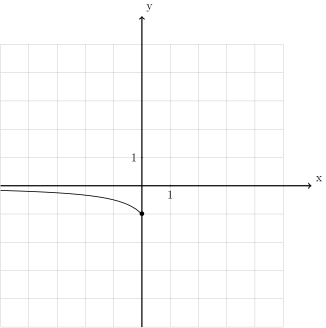
\[\lim\limits_{x \underset{>}{\to} 0} f = 1\]Lorsqu’on affirme que \(\lim\limits_{x \to 0} f_{]-\infty;0]} (x) = -1\), cela signifie précisément que la fonction \(f\) possède une limite à gauche de 0 et que celle-ci vaut \(-1\), ce qu’on note :
\[\lim\limits_{x \underset{<}{\to} 0} f = 1\]
Donnons à présent la définition générale de limite à droite et de limite à gauche : il s’agit simplement d’utiliser la définition de limite et de restriction de fonction.
Définition 3.5.2. Soit un intervalle \(I\) éventuellement privé d’un point \(c\). Soit \(f : I \to \mathbb{R}\).
On dit que \(f\) a une limite à droite \(L \in \mathbb{R}\) en \(c\) si la fonction \(f_{[c;+\infty[} : I \cap [c;+\infty[ \to \mathbb{R}\) a comme limite \(L\) en \(c\). On note :
\[\lim\limits_{x \underset{>}{\to} c} f(x)=L\]On dit que \(f\) a une limite à gauche \(L \in \mathbb{R}\) en \(c\) si la fonction \(f_{]-\infty;c]} : I \cap ]-\infty;c] \to \mathbb{R}\) a comme limite \(L\) en \(c\). On note :
\[\lim\limits_{x \underset{<}{\to} c} f(x)=L\]
Remarque 3.5.3. Certaines personnes préfèrent utiliser les notations \(\lim\limits_{x \to c^{+}} f(x)\) pour les limites à droite et \(\lim\limits_{x \to c^{-}} f(x)\) pour les limites à gauche. Je vous déconseille d’utiliser ces notations.
Donnons quelques exemples et contre-exemples.
Exemple 3.5.4. La fonction \(f : \mathbb{R}\to \mathbb{R}\) dont le graphe est :
![\draw[step=1cm,gray,very thin] (-5,-5) grid (5,5);
\draw[very thick,->] (-5,0) -- (6,0) node[anchor=south west] {x};
\draw[very thick,->] (0,-5) -- (0,6) node[anchor=south west] {y};
\foreach \x in {1}
\draw (\x cm,1pt) -- (\x cm,-1pt) node[anchor=north] {$\x$};
\foreach \y in {1}
\draw (1pt,\y cm) -- (-1pt,\y cm) node[anchor=east] {$\y$};
\draw[thick] plot[domain=-5:0.8](\x,{1/(\x - 1)});
\draw[thick] plot[domain=1:5](\x,{1+1/(\x)});
\draw (1,-1)node{$\bullet$};
\draw[thick, fill=white](1,2)circle(0.15);](_images/tikz-589d557c2f1ce7e17a5ab7d8a0551189029dfd80.svg)
Exemple 3.5.5. La fonction carrée \(f : \mathbb{R}\to \mathbb{R}\) dont le graphe est :
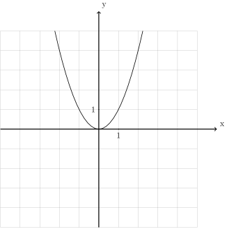
Contre-exemple 3.5.6. La fonction inverse \(f : \mathbb{R}\to \mathbb{R}\) dont le graphe est :
n’a pas de limite à droite en \(0\) et n’a pas de limite à gauche en \(0\).
Dans tous les exemples déjà rencontrés, remarquons que le seul où la fonction admet une limite à droite et une limite à gauche au point considéré et que ces deux limites sont égales correspond au cas où la fonction admet une (véritable) limite en ce point, qui est d’ailleurs égale à l’unique valeur de la limite à droite et de la limite à gauche.
Ce n’est pas un hasard : pour avoir une limite en un point \(c\), une fonction \(f\) doit se rapprocher de façon définitive et uniforme d’une unique valeur, elle doit donc avoir une limite à gauche en ce point et une limite à droite en ce point et celles-ci doivent être identiques. L’inverse est vrai aussi : si une fonction \(f\) a une limite à gauche en un point \(c\) et une limite à droite en \(c\) et que celles-ci sont égales, alors \(f\) se rapprochent bien définitivement et uniformément de cet unique nombre au fur et à mesure qu’on se rapproche de \(c\) ! Plus rigoureusement, on peut démontrer :
Proposition 3.5.7. Soit un intervalle \(I\) éventuellement privé d’un point \(c\). Soit \(f : I \to \mathbb{R}\).
Alors \(f\) possède une limite \(\lim\limits_{x \to c} f(x)=L\) en \(c\) si et seulement si \(f\) possède une limite à droite \(\lim\limits_{x \underset{>}{\to} c} f(x)\) en \(c\) et une limite à gauche \(\lim\limits_{x \underset{<}{\to} c} f(x)\) en \(c\) et que celles-ci sont égales : \(\lim\limits_{x \underset{>}{\to} c} f(x)=\lim\limits_{x \underset{<}{\to} c} f(x)\).
Remarque 3.5.8. Certaines personnes aiment beaucoup les limites à droite et les limites à gauche, à tel point qu’elles définissent celles-ci en premier et les utilisent pour définir la notion de limite générale.
Pourtant, c’est bien la notion de limite qui est fondamentale, si utile et qui permet de démontrer d’impressionnants résultats mathématiques. De plus, les notions de limite à droite et limite à gauche ne se généralisent pas lorsqu’on ne peut pas parler de droite et de gauche tandis que la notion de limite plus gobale se généralise dans de nombreux contextes.
Pour ces raisons, nous n’insisterons volontairement pas sur les notions de limites à droite et de limite à gauche dans ce cours.
Exemple 3.5.9. Considérons la fonction inverse \(f : {\mathbb{R}}_{0}\to \mathbb{R}\) dont le graphe est :
Comme nous l’avons vu dans la section précédente, cette fonction ne diverge pas (que ce soit vers \(+\infty\) ou \(-\infty\) en \(0\)). Par contre, si nous ne considérons que les points de son domaine qui sont plus grands ou égaux à \(0\), on obtient la fonction \(f_{[0;+\infty[} : ]0;+\infty[ \to \mathbb{R}\) dont le graphe est :
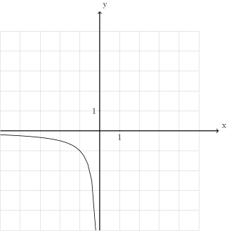
Définition 3.5.10. Soit un intervalle \(I\) éventuellement privé d’un point \(c\). Soit \(f : I \to \mathbb{R}\).
On dit que \(f\) diverge vers :math:`+infty` à droite en \(c\) si la fonction \(f_{[c;+\infty[} : I \cap [c;+\infty[ \to \mathbb{R}\) diverge vers \(+\infty\) en \(c\). On note :
\[\lim\limits_{x \underset{>}{\to} c} f(x)=+\infty\]On dit que \(f\) diverge vers :math:`-infty` à droite en \(c\) si la fonction \(f_{[c;+\infty[} : I \cap [c;+\infty[ \to \mathbb{R}\) diverge vers \(-\infty\) en \(c\). On note :
\[\lim\limits_{x \underset{>}{\to} c} f(x)=-\infty\]On dit que \(f\) a diverge vers :math:`+infty` à gauche en \(c\) si la fonction \(f_{]-\infty;c]} : I \cap ]-\infty;c] \to \mathbb{R}\) diverge vers \(+\infty\) en \(c\). On note :
\[\lim\limits_{x \underset{<}{\to} c} f(x)=+\infty\]On dit que \(f\) a diverge vers :math:`-infty` à gauche en \(c\) si la fonction \(f_{]-\infty;c]} : I \cap ]-\infty;c] \to \mathbb{R}\) diverge vers \(-\infty\) en \(c\). On note :
\[\lim\limits_{x \underset{<}{\to} c} f(x)=-\infty\]On a un résultat équivalent pour les divergence à gauche et à droite à celui qu’on avait pour les limites :
Proposition 3.5.11. Soit un intervalle \(I\) éventuellement privé d’un point \(c\). Soit \(f : I \to \mathbb{R}\).
Alors \(f\) diverge vers \(+\infty\) en \(c\) si et seulement si \(f\) diverge vers \(+\infty\) à droite en \(c\) et \(f\) diverge vers \(+\infty\) à gauche en \(c\).
De plus, \(f\) diverge vers \(-\infty\) en \(c\) si et seulement si \(f\) diverge vers \(-\infty\) à droite en \(c\) et \(f\) diverge vers \(-\infty\) à gauche en \(c\).
Exemple 3.5.12. La fonction \(f : \mathbb{R}\to \mathbb{R}\) dont le graphe est :
![\draw[step=1cm,gray,very thin] (-5,-5) grid (5,5);
\draw[very thick,->] (-5,0) -- (6,0) node[anchor=south west] {x};
\draw[very thick,->] (0,-5) -- (0,6) node[anchor=south west] {y};
\foreach \x in {1}
\draw (\x cm,1pt) -- (\x cm,-1pt) node[anchor=north] {$\x$};
\foreach \y in {1}
\draw (1pt,\y cm) -- (-1pt,\y cm) node[anchor=east] {$\y$};
\draw[thick] plot[domain=-5:1.55279](\x,{1/((\x-2)*(\x-2))});
\draw[thick] plot[domain=2.44721:5](\x,{1/((\x-2)*(\x-2))});](_images/tikz-2aa7da5cb937e1d84d0c8ed083e5e2e00c148e17.svg)
diverge vers \(+\infty\) à droite en \(2\) et diverge vers \(+\infty\) à gauche en \(2\). Elle diverge vers \(+\infty\) en \(2\).
Exemple 3.5.13. La fonction \(f : \mathbb{R}\to \mathbb{R}\) dont le graphe est :
diverge vers \(-\infty\) à gauche en \(1\). Elle ne diverge pas à droite en \(1\).
Exemple 3.5.14. La fonction carrée \(f : \mathbb{R}\to \mathbb{R}\) dont le graphe est :
ne diverge ni à gauche ni à droite en \(-2\).
Exercice 3.5.15. Pour la fonction dont le graphe est ci-dessous, quels sont les points où la fonction a une limite à gauche ou à droite mais n’a pas de limite ? Quels sont les points où la fonction diverge à gauche ou à droite mais ne diverge pas ? Pour tous ces points, donner les limites ou les divergences à gauche ou à droite éventuelles.
![\draw[step=1cm,gray,very thin] (-5,-5) grid (5,5);
\draw[very thick,->] (-5,0) -- (6,0) node[anchor=south west] {x};
\draw[very thick,->] (0,-5) -- (0,6) node[anchor=south west] {y};
\foreach \x in {1}
\draw (\x cm,1pt) -- (\x cm,-1pt) node[anchor=north] {$\x$};
\foreach \y in {1}
\draw (1pt,\y cm) -- (-1pt,\y cm) node[anchor=east] {$\y$};
\draw[thick] plot[domain=-5:-2.3536](\x,{3-1/((\x+2)*(\x+2))});
\draw[thick] plot[domain=-1.4453:-0.05](\x,{-1.75-1/((\x+2)*(\x+2))});
\draw[thick, fill=white](0,-2)circle(0.15);
\draw[thick] plot[domain=0.2:5](\x,{1/(\x)});](_images/tikz-ab6a888318271fac3ead2635ee0cb0018d0f1081.svg)
Solution. Le seul point où la fonction n’a pas de limite ou ne diverge pas est \(0\). La fonction a une limite à gauche en \(0\) qui vaut \(-2\) et diverge vers \(+\infty\) à droite en \(0\).
Exercice 3.5.16. Tracer le graphe d’une fonction \(f\) ayant les propriétés suivantes :
Solution.
![\draw[step=1cm,gray,very thin] (-5,-5) grid (5,5);
\draw[very thick,->] (-5,0) -- (6,0) node[anchor=south west] {x};
\draw[very thick,->] (0,-5) -- (0,6) node[anchor=south west] {y};
\foreach \x in {1}
\draw (\x cm,1pt) -- (\x cm,-1pt) node[anchor=north] {$\x$};
\foreach \y in {1}
\draw (1pt,\y cm) -- (-1pt,\y cm) node[anchor=east] {$\y$};
\draw (-2,3)node{$\bullet$};
\draw[thick] plot[domain=-2:-1](\x,{-\x+1});
\draw (-1,2)node{$\bullet$};
\draw[thick, fill=white](-1,-1.6666)circle(0.15);
\draw[thick] plot[domain=-1:0.25](\x,{-1+1/(\x-(1/2))});
\draw (0.5,1)node{$\bullet$};
\draw[thick] plot[domain=0.66667:2](\x,{-1+1/(\x-(1/2))});
\draw (2,-0.3333)node{$\bullet$};](_images/tikz-4f4441d1d937c6758b4a84a3150b4e75f1b02dd9.svg)
Exemple 3.5.17. Déterminer quelles sont les limites et les divergence à gauche et à droite.
|
|
Solution.
|
|
Exercice 3.5.18. Tracer le graphe d’une fonction \(f : ]-\infty;-3[ \cup ]-3;2[ \cup ]2;4] \to \mathbb{R}\) qui est continue partout sauf en \(-1\) et \(0\), qui vaut \(1\) en \(-1\), \(4\) en \(0\) et \(-\frac{1}{2}\) en \(4\), qui a comme limite à gauche \(1\) en \(-1\) et comme limite à droite \(-1\) en \(1\), qui a comme limite à gauche \(-3\) en \(0\) et qui diverge vers \(+\infty\) à droite en \(0\), qui diverge vers \(+\infty\) à gauche en \(2\) et qui diverge vers \(-\infty\) à droite en \(2\).
Solution.
![\draw[step=1cm,gray,very thin] (-5,-5) grid (5,5);
\draw[very thick,->] (-5,0) -- (6,0) node[anchor=south west] {x};
\draw[very thick,->] (0,-5) -- (0,6) node[anchor=south west] {y};
\foreach \x in {1}
\draw (\x cm,1pt) -- (\x cm,-1pt) node[anchor=north] {$\x$};
\foreach \y in {1}
\draw (1pt,\y cm) -- (-1pt,\y cm) node[anchor=east] {$\y$};
\draw[thick] plot[domain=-5:-3.4472](\x,{1/((\x+3)*(\x+3))});
\draw[thick] plot[domain=-2.7777:-1.05](\x,{0.5+1/(\x+3)});
\draw (-1,1)node{$\bullet$};
\draw[thick, fill=white](-1,-1)circle(0.15);
\draw[thick] plot[domain=-0.95:-0.05](\x,{-3-2*\x});
\draw[thick, fill=white](0,-3)circle(0.15);
\draw (0,4)node{$\bullet$};
\draw[thick] plot[domain=0.14278:1](\x,{-2+1/(\x)});
\draw[thick] plot[domain=1:1.857](\x,{-2-1/(\x-2)});
\draw[thick, fill=white](2,-1)circle(0.15);
\draw[thick] plot[domain=2.2:4](\x,{-1/(\x-2)});
\draw (4,-0.5)node{$\bullet$};](_images/tikz-f522234f7b70349a2c3cf0ef131d2f153af01fe8.svg)
Exercice 3.5.19. Déterminer si les fonctions convergent ou divergent à droite ou à gauche au point considéré. Si elles convergent à droite ou à gauche, donner la limite à droite ou à gauche. Si elles divergent à droite ou à gauche, donner le type de divergence (vers \(+\infty\) ou vers \(-\infty\)). N’hésitez pas à vous aider d’un graphe.
|
|
Solution.
|
|
3.6 Limites et divergence de fonctions en \(+\infty\) et \(-\infty\)¶
Exemple 3.6.1. Nous souhaiterions pouvoir parler du comportement asymptotique de la fonction inverse, dont le graphe est pour rappel le suivant.
Nous aimerions savoir ce que deviennent les nombres \(f(x)\) au fur et à mesure que nous considérons des \(x\) de plus en plus grands. Voyons d’abord ce que vaut \(f(x)\) pour certaines valeurs de \(x\) particulières qui sont de plus en plus grandes :
\[\lim\limits_{x \to +\infty} \frac{1}{x}=0\]
\[f(-10)=\frac{1}{-10}= -0,1\]\[f(-100)=\frac{1}{-100}= -0,01\]\[f(-1000)=\frac{1}{-1000}= -0,001\]\[f(-1000000)=\frac{1}{-1000000}= -0,000001\]\[f(-1000000000000000)=\frac{1}{-1000000000000000}= -0,000000000000001\]Plus généralement, si nous divisons \(1\) par des nombres négatifs arbitrairement petits, le résultat sera un nombre négatif arbitrairement proche de \(0\). Au fur à mesure que les abscisses \(x\) des points du graphes diminuent, les ordonnées \(f(x)\) associées se rapprochent uniformément et définitivement de \(0\). Nous retrouvons une fois de plus l’idée de limite : la nouveauté étant que nous observons le comportement de la fonction non pas à l’approche d’un point, mais son comportement pour des nombres de plus en plus petits.
\[\lim\limits_{x \to -\infty} \frac{1}{x}=0\]
Remarque 3.6.2. Il se trouve que la fonction inverse a la même limite pour \(x\) tendant vers \(+\infty\) et pour \(x\) tendant vers \(-\infty\). Ce n’est bien évidemment pas toujours le cas. Par exemple, la fonction dont le graphe est ci-dessous a comme limite \(-1\) pour \(x\) tendant vers \(+\infty\) et \(2\) pour \(x\) tendant vers \(-\infty\).
![\draw[step=1cm,gray,very thin] (-7,-5) grid (7,5);
\draw[very thick,->] (-7,0) -- (8,0) node[anchor=south west] {x};
\draw[very thick,->] (0,-5) -- (0,6) node[anchor=south west] {y};
\foreach \x in {1}
\draw (\x cm,1pt) -- (\x cm,-1pt) node[anchor=north] {$\x$};
\foreach \y in {1}
\draw (1pt,\y cm) -- (-1pt,\y cm) node[anchor=east] {$\y$};
\draw[thick] plot[domain=-7:-1](\x,{1-1/(\x)});
\draw[thick] plot[domain=-1:1](\x,{(5/2)-(\x)*(\x)/2});
\draw[thick] plot[domain=1:2](\x,{4-2*\x});
\draw[thick] plot[domain=2:7](\x,{-2+8/((\x)*(\x))});](_images/tikz-c61ba182b2c6263c7c024416412fd3425fd4b435.svg)
Donnons les définitions de limite d’une fonction pour \(x\) qui tend vers \(+\infty\) ou vers \(-\infty\). Celle-ci est très similaire à la définition de limite d’une fonction en un point et est construite de la même manière.
Définition 3.6.3. Soit un intervalle \(I\) non majoré. Soit \(f : I \to \mathbb{R}\).
On dit que \(f\) a une limite \(L \in \mathbb{R}\) pour \(x\) qui tend vers \(+\infty\) si pour toute marge d’erreur \(\epsilon >0\), il existe \(N > 0\) tel que pour tout \(x \in I\) qui est plus grand ou égal à \(N\), c’est-à-dire tel que \(x \ge N\), on a nécessairement que \(f(x)\) est à une distance plus petite ou égale de \(L\) que \(\epsilon\), c’est-à-dire qu’on a \(|f(x)-L| \le \epsilon\). Dans ce cas, on note :
\[\lim\limits_{x \to +\infty} f(x)=L\]
Définition 3.6.4. Soit un intervalle \(I\) non minoré. Soit \(f : I \to \mathbb{R}\).
On dit que \(f\) a une limite \(L \in \mathbb{R}\) pour \(x\) qui tend vers \(-\infty\) si pour toute marge d’erreur \(\epsilon >0\), il existe \(N < 0\) tel que pour tout \(x \in I\) qui est plus petit ou égal à \(N\), c’est-à-dire tel que \(x \le N\), on a nécessairement que \(f(x)\) est à une distance plus petite ou égale de \(L\) que \(\epsilon\), c’est-à-dire qu’on a \(|f(x)-L| \le \epsilon\). Dans ce cas, on note :
\[\lim\limits_{x \to -\infty} f(x)=L\]
Donnons quelques exemples et contre-exemples.
Exemple 3.6.5. La fonction dont le graphe est donné ci-dessous a comme limite \(3\) pour \(x\) qui tend vers \(+\infty\).
![\draw[step=1cm,gray,very thin] (-5,-5) grid (5,5);
\draw[very thick,->] (-5,0) -- (6,0) node[anchor=south west] {x};
\draw[very thick,->] (0,-5) -- (0,6) node[anchor=south west] {y};
\foreach \x in {1}
\draw (\x cm,1pt) -- (\x cm,-1pt) node[anchor=north] {$\x$};
\foreach \y in {1}
\draw (1pt,\y cm) -- (-1pt,\y cm) node[anchor=east] {$\y$};
\draw (-4,-2)node{$\bullet$};
\draw[thick] plot[domain=-4:-2](\x,{(1/2)*\x});
\draw (-2,-1)node{$\bullet$};
\draw (2,2.5)node{$\bullet$};
\draw[thick] plot[domain=2:5](\x,{3-1/(\x)});](_images/tikz-6c1c83ac5d8f99015dda517d0bdb3b3a731c45dd.svg)
Pour cette fonction, il ne fait pas sens de parler d’une éventuelle limite pour \(x\) qui tend vers \(-\infty\) puisque son domaine de définition est \([-4;-2] \cup [2;\rightarrow[\).
Exemple 3.6.6. La fonction dont le graphe est donné ci-dessous a comme limite \(-1\) pour \(x\) qui tend vers \(+\infty\) et pour \(x\) qui tend vers \(-\infty\).
![\draw[step=1cm,gray,very thin] (-5,-5) grid (5,5);
\draw[very thick,->] (-5,0) -- (6,0) node[anchor=south west] {x};
\draw[very thick,->] (0,-5) -- (0,6) node[anchor=south west] {y};
\foreach \x in {1}
\draw (\x cm,1pt) -- (\x cm,-1pt) node[anchor=north] {$\x$};
\foreach \y in {1}
\draw (1pt,\y cm) -- (-1pt,\y cm) node[anchor=east] {$\y$};
\draw[thick] plot[samples=150,domain=-5:-0.01](\x,{-1+sin(3*180*\x)*(1/(3*\x))});
\draw[thick] plot[samples=150,domain=0.01:5](\x,{-1+sin(3*180*\x)*(1/(3*\x))});](_images/tikz-56a74b688aa1f95f24ee9707089ef27680ae58b6.svg)
Contre-exemple 3.6.7. La fonction dont le graphe est donné ci-dessous n’a pas de limite pour \(x\) qui tend vers \(+\infty\) et n’a pas de limite pour \(x\) qui tend vers \(-\infty\).
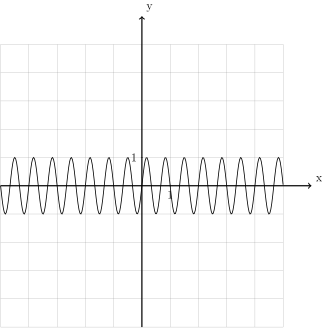
En effet, peu importe si on considère des nombres \(x\) de plus en plus grands ou de plus en plus petits, les nombres \(f(x)\) associées ne finiront jamais par se rapprocher de manière uniforme et définitive d’une valeur unique. Ils continueront d’osciller autour de \(0\) encore et encore.
Contre-exemple 3.6.8. La fonction dont le graphe est donné ci-dessous n’a pas de limite pour \(x\) qui tend vers \(+\infty\) mais a comme limite \(1\) pour \(x\) qui tend vers \(-\infty\).
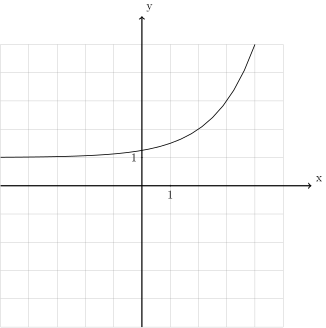
Exemple 3.6.9. Nous souhaiterions pouvoir parler du comportement asymptotique de la fonction cubique, dont le graphe est pour rappel le suivant.
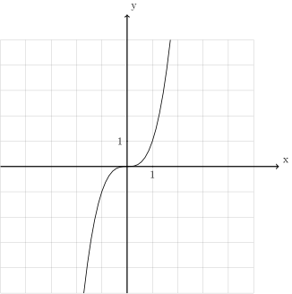
Nous aimerions savoir ce que deviennent les nombres \(f(x)\) au fur et à mesure que nous considérons des \(x\) de plus en plus grands. Voyons d’abord ce que vaut \(f(x)\) pour certaines valeurs de \(x\) particulières qui sont de plus en plus grandes :
\[\lim\limits_{x \to +\infty} x^3=+\infty\]
\[\lim\limits_{x \to -\infty} x^3=-\infty\]
Définition 3.6.10. Soit un intervalle \(I\) non majoré. Soit \(f : I \to \mathbb{R}\).
On dit que \(f\) a diverge vers \(+\infty\) pour \(x\) qui tend vers \(+\infty\) si pour toute borne supérieure \(M >0\), il existe \(N > 0\) tel que pour tout \(x \in I\) qui est plus grand ou égal à \(N\), c’est-à-dire tel que \(x \ge N\), on a nécessairement que \(f(x)\) est plus grand ou égal à \(M\), c’est-à-dire qu’on a \(f(x) \ge M\). Dans ce cas, on note :
\[\lim\limits_{x \to +\infty} f(x)=+\infty\]
Définition 3.6.11. Soit un intervalle \(I\) non majoré. Soit \(f : I \to \mathbb{R}\).
On dit que \(f\) a diverge vers \(-\infty\) pour \(x\) qui tend vers \(+\infty\) si pour toute borne inférieure \(M <0\), il existe \(N > 0\) tel que pour tout \(x \in I\) qui est plus grand ou égal à \(N\), c’est-à-dire tel que \(x \ge N\), on a nécessairement que \(f(x)\) est plus petit ou égal à \(M\), c’est-à-dire qu’on a \(f(x) \le M\). Dans ce cas, on note :
\[\lim\limits_{x \to +\infty} f(x)=-\infty\]
Définition 3.6.12. Soit un intervalle \(I\) non minoré. Soit \(f : I \to \mathbb{R}\).
On dit que \(f\) a diverge vers \(+\infty\) pour \(x\) qui tend vers \(-\infty\) si pour toute borne supérieure \(M >0\), il existe \(N < 0\) tel que pour tout \(x \in I\) qui est plus petit ou égal à \(N\), c’est-à-dire tel que \(x \le N\), on a nécessairement que \(f(x)\) est plus grand ou égal à \(M\), c’est-à-dire qu’on a \(f(x) \ge M\). Dans ce cas, on note :
\[\lim\limits_{x \to -\infty} f(x)=+\infty\]
Définition 3.6.13. Soit un intervalle \(I\) non majoré. Soit \(f : I \to \mathbb{R}\).
On dit que \(f\) a diverge vers \(-\infty\) pour \(x\) qui tend vers \(-\infty\) si pour toute borne inférieure \(M <0\), il existe \(N < 0\) tel que pour tout \(x \in I\) qui est plus grand ou égal à \(N\), c’est-à-dire tel que \(x \le N\), on a nécessairement que \(f(x)\) est plus petit ou égal à \(M\), c’est-à-dire qu’on a \(f(x) \le M\). Dans ce cas, on note :
\[\lim\limits_{x \to +\infty} f(x)=-\infty\]
Donnons quelques exemples et contre-exemples.
Exemple 3.6.14. La fonction valeur absolue diverge vers \(+\infty\) pour \(x\) qui tend vers \(+\infty\) et diverge ves \(+\infty\) pour \(x\) qui tend vers \(-\infty\).
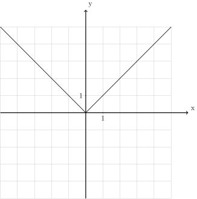
Exemple 3.6.15. La fonction racine carrée diverge vers \(+\infty\) pour \(x\) qui tend vers \(+\infty\). Il ne fait pas sens de parler d’une limite ou de divergence pour \(x\) qui tend vers \(-\infty\) pour la racine carrée puisqu’elle n’est pas définie sur l’ensemble des réels strictement négatifs.
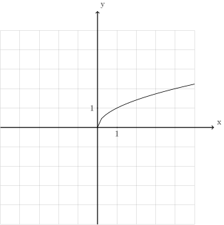
Exemple 3.6.16. La fonction dont le graphe est donné ci-dessous diverge vers \(-\infty\) pour \(x\) qui tend vers \(+\infty\) et diverge vers \(+\infty\) pour \(x\) qui tend vers \(-\infty\).
![\draw[step=1cm,gray,very thin] (-5,-5) grid (5,5);
\draw[very thick,->] (-5,0) -- (6,0) node[anchor=south west] {x};
\draw[very thick,->] (0,-5) -- (0,6) node[anchor=south west] {y};
\foreach \x in {1}
\draw (\x cm,1pt) -- (\x cm,-1pt) node[anchor=north] {$\x$};
\foreach \y in {1}
\draw (1pt,\y cm) -- (-1pt,\y cm) node[anchor=east] {$\y$};
\draw[thick] plot[domain=-3:0](\x,{-3+1/2^\x});
\draw (0,-2)node{$\bullet$};
\draw (1,2.5)node{$\bullet$};
\draw[thick] plot[samples=150,domain=1:4](\x,{3-(1/2)*\x*\x});](_images/tikz-5b322304738d725e3c2dd36dba40a7ee565bd709.svg)
Contre-exemple 3.6.17. La fonction dont le graphe est donné ci-dessous ne diverge pas pour \(x\) qui tend vers \(+\infty\) et ne diverge pas pour \(x\) qui tend vers \(-\infty\).
Contre-exemple 3.6.18. La fonction dont le graphe est donné ci-dessous diverge vers \(-\infty\) pour \(x\) qui tend vers \(+\infty\) mais ne diverge pas pour \(x\) qui tend vers \(-\infty\).
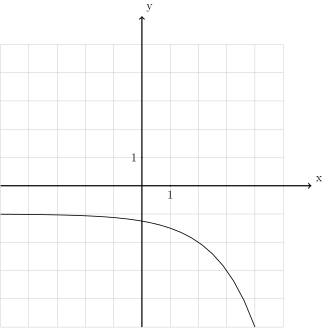
Remarque 3.6.19. Il existe une quantité non négligeable de résultats intéressants portant sur les limites et les divergences de fonctions pour \(x\) qui tend vers \(+\infty\) ou vers \(-\infty\). Néanmoins, dans ce cours, nous nous contenterons d’utiliser ces notions comme des outils qui permettent de décrire le comportement asymptotique d’une fonction.
Passons aux exercices.
Exercice 3.6.20. (Exercice théorique un peu difficile.)
Les définitions 3.6.3 et 3.6.4 sont très similaires. Identifier la seule petite différence et expliquer celle-ci.
Exercice 3.6.21. Tracer le graphe d’une fonction \(f\) ayant les propriétés suivantes :
Solution.
![\draw[step=1cm,gray,very thin] (-5,-5) grid (5,5);
\draw[very thick,->] (-5,0) -- (6,0) node[anchor=south west] {x};
\draw[very thick,->] (0,-5) -- (0,6) node[anchor=south west] {y};
\foreach \x in {1}
\draw (\x cm,1pt) -- (\x cm,-1pt) node[anchor=north] {$\x$};
\foreach \y in {1}
\draw (1pt,\y cm) -- (-1pt,\y cm) node[anchor=east] {$\y$};
\draw[thick] plot[domain=-5:-3](\x,{\x+4});
\draw (-3,1)node{$\bullet$};
\draw[thick, fill=white](-3,2)circle(0.15);
\draw[thick] plot[domain=-2.95:2](\x,{2});
\draw (2,2)node{$\bullet$};
\draw[thick, fill=white](2,-2)circle(0.15);
\draw[thick] plot[domain=2.08:5](\x,{-1-(1/2)*\x});](_images/tikz-fbfce5d51d1fc3bf3b0a3335243fdc1f2f7e602a.svg)
Exercice 3.6.22. Déterminer si les fonctions dont les graphes sont donnés ci-dessous ont une limite ou divergent pour \(x\) qui tend vers \(+\infty\) ou \(-\infty\).
|
|
Solution.
|
|
Exercice 3.6.23. Déterminer si les fonctions convergent ou divergent pour \(x\) qui tend vers \(+\infty\) ou pour \(x\) qui tend vers \(\infty\). Si elles convergent, donner la limite. Si elles divergent, donner le type de divergence (vers \(+\infty\) ou vers \(-\infty\)). N’hésitez pas à vous aider d’un graphe.
Solution.
|
|
Exercice 3.6.24. Un homme souhaite changer la teneur en sel de son aquarium pour y accueillir de nouveaux poissons. Alors que son aquarium contient initialement 3 litres d’eau douce, il commence à remplir l’aquarium avec à la fois de l’eau douce et de l’eau salée (avec deux pompes différentes). La pompe d’eau douce a un débit d’un centilitre par seconde, tandis que la pompe d’eau salée a un débit de deux centilitres par seconde.
Quel est le rapport de la quantité d’eau douce et de la quantité d’eau salée après une minute de remplissage ?
Quel est le rapport de la quantité d’eau douce et de la quantité d’eau salée après \(r\) secondes de remplissage ? (\(t\) étant un nombre réel strictement positif quelconque.)
Au fur et à mesure que le temps passe, de quoi se rapproche le rapport de la quantité d’eau douce et de la quantité d’eau salée ?
Solution.
\(\frac{3000+60}{120}=\frac{51}{2}=25,5\). Après 60 secondes, il y a \(25,5\) fois plus d’eau douce dans l’aquarium que d’eau salée.
\(f(t)=\frac{3000+t}{2t}\). Après \(t\) secondes, il y a \(\frac{3000+t}{2t}\) fois plus (ou moins) d’eau douce dans l’aquarium que d’eau salée.
\(\lim\limits_{x \to +\infty} \frac{3000+t}{2t}=\frac{1}{2}\). Plus le temps passe, plus on se rapproche d’une situation où il y a deux fois moins d’eau douce dans l’aquarium que d’eau salée.
Exercice 3.6.25. Un avion a une panne de moteur en plein vol à une altitude de \(10\)km et menace de s’écraser. Le pilote va essayer de faire planer l’avion jusqu’au prochain aréoport, mais il craint que l’avion perde trop d’altitude en planant.
Il se souvient de ses cours d’aviation que dans ce genre de situation, l’avion perd d’abord rapidement beaucoup d’altitude mais se stabilise peu à peu. Il se souvient que dans ce genre de situation, l’altitude de l’avion après \(t\) heures est de \(A*\frac{t}{2(t+1)}\) où \(A\) est l’altitude initiale de l’avion.
De quelle altitude se rapproche de l’avion au fur et à mesure que le temps passe ? Risque-t-il de s’écraser ?
Solution. \(\lim\limits_{x \to +\infty} 10.\frac{t}{2(t+1)}=5\). Plus le temps passe, plus l’altitude de l’avion se rapproche de \(5\)km. L’avion ne risque pas de s’écraser.
3.7 Asymptotes¶
Exemple 3.7.1. Voici ci-dessous le graphe de la fonction :
![\draw[step=1cm,gray,very thin] (-5,-5) grid (5,5);
\draw[very thick,->] (-5,0) -- (6,0) node[anchor=south west] {x};
\draw[very thick,->] (0,-5) -- (0,6) node[anchor=south west] {y};
\foreach \x in {1}
\draw (\x cm,1pt) -- (\x cm,-1pt) node[anchor=north] {$\x$};
\foreach \y in {1}
\draw (1pt,\y cm) -- (-1pt,\y cm) node[anchor=east] {$\y$};
\draw[thick] plot[domain=-5:0.8571](\x,{2+1/(\x -1)});
\draw[thick] plot[domain=1.3334:5](\x,{2+1/(\x -1)});](_images/tikz-2888349597db2a767b9d86b30d80ed026bd70c9c.svg)
Les limites et les divergences intéressantes pour cette fonction sont :
Rappelons-nous ce que signifie en français la première de ces quatre affirmations : au fur et à mesure que \(x\) devient grand, les nombres \(2+\frac{1}{x-1}\) associées se rapprochent uniformément et définitivement de \(2\). Une autre façon d’exprimer cela, plus géométrique, est de dire que plus on considère des points du graphe de la fonction \(f\) dont les abscisses sont grandes, plus le graphe de \(f\) se rapproche uniformément et définitivement de la droite d’équation \(y=2\) :
![\draw[step=1cm,gray,very thin] (-5,-5) grid (5,5);
\draw[very thick,->] (-5,0) -- (6,0) node[anchor=south west] {x};
\draw[very thick,->] (0,-5) -- (0,6) node[anchor=south west] {y};
\foreach \x in {1}
\draw (\x cm,1pt) -- (\x cm,-1pt) node[anchor=north] {$\x$};
\foreach \y in {1}
\draw (1pt,\y cm) -- (-1pt,\y cm) node[anchor=east] {$\y$};
\draw[thick] plot[domain=-5:0.8571](\x,{2+1/(\x -1)});
\draw[thick] plot[domain=1.3334:5](\x,{2+1/(\x -1)});
\draw[blue,thick,dotted] plot[domain=-5:5](\x,{2)});](_images/tikz-384cb680834c3f47f9d7ee7c3aa0323214585b03.svg)
![\draw[step=1cm,gray,very thin] (-5,-5) grid (5,5);
\draw[very thick,->] (-5,0) -- (6,0) node[anchor=south west] {x};
\draw[very thick,->] (0,-5) -- (0,6) node[anchor=south west] {y};
\foreach \x in {1}
\draw (\x cm,1pt) -- (\x cm,-1pt) node[anchor=north] {$\x$};
\foreach \y in {1}
\draw (1pt,\y cm) -- (-1pt,\y cm) node[anchor=east] {$\y$};
\draw[thick] plot[domain=-5:0.8571](\x,{2+1/(\x -1)});
\draw[thick] plot[domain=1.3334:5](\x,{2+1/(\x -1)});
\draw[blue,thick,dotted](1,-5)--(1,5);](_images/tikz-ea53f536c6d70bb842e5d3dfaf0e38f21aa88d48.svg)
Plus on on considère des points du graphe de \(f\) dont les abscisses sont proches de \(1\), plus le graphe de \(f\) se rapproche uniformément et définitivement de cette droite. Le sens de cette asymptote verticale est exactement celui des deux divergences \(\lim\limits_{x \underset{>}{\to} 1} 2+\frac{1}{x-1}=+\infty\) et \(\lim\limits_{x \underset{<}{\to} 1} 2+\frac{1}{x-1}=-\infty\).
Les asymptotes horizontales sont donc juste une manière plus géométrique d’exprimer des limites pour \(x\) qui tend vers \(+\infty\) ou \(-\infty\) de fonctions et les asymptotes verticales sont juste une manière plus géométrique d’exprimer des divergences en un point de fonctions. Donnons les définitions précises de ces deux nouvelles notions.
Définition 3.7.2. Soit un intervalle \(I\) non majoré. Soit \(f : I \to \mathbb{R}\).
Si \(\lim\limits_{x \to +\infty} f(x)=L\), on dit que \(f\) a une asymptote horizontale (à droite) d’équation cartésienne \(y=L\) et on note :
\[{\mbox{AH}}_{d} \equiv y=L\]
Définition 3.7.3. Soit un intervalle \(I\) non minoré. Soit \(f : I \to \mathbb{R}\).
Si \(\lim\limits_{x \to +\infty} f(x)=L\), on dit que \(f\) a une asymptote horizontale (à gauche) d’équation cartésienne \(y=L\) et on note :
\[{\mbox{AH}}_{g} \equiv y=L\]
Définition 3.7.4. Soit un intervalle \(I\) éventuellement privé d’un point \(c\). Soit \(f : I \to \mathbb{R}\).
Si \(\lim\limits_{x \underset{>}{\to} c} f(x)=+\infty\) ou \(\lim\limits_{x \underset{>}{\to} c} f(x)=-\infty\), on dit que \(f\) a une asymptote verticale (à droite) d’équation cartésienne \(x=c\) et on note :
\[{\mbox{AV}}_{d} \equiv x=c\]
Définition 3.7.5. Soit un intervalle \(I\) éventuellement privé d’un point \(c\). Soit \(f : I \to \mathbb{R}\).
Si \(\lim\limits_{x \underset{<}{\to} c} f(x)=+\infty\) ou \(\lim\limits_{x \underset{<}{\to} c} f(x)=-\infty\), on dit que \(f\) a une asymptote verticale (à gauche) d’équation cartésienne \(x=c\) et on note :
\[{\mbox{AV}}_{g} \equiv x=c\]
Remarque 3.7.6. Il existe encore au moins un autre type d’asymptote : les asymptotes obliques. Nous n’en parlerons pas dans ce cours.
Puisque les asymptotes ne sont qu’une réinterprétation géométrique de certaines limites, il n’y a pas grand chose d’autre à dire à leur sujet. Passons donc immédiatement aux exercices.
Exercice 3.7.7. Pour les fonctions dont les graphes sont donnés ci-dessous, lister toutes les asymptotes horizontales et verticales et donner leurs équations cartésiennes.
![\draw[step=1cm,gray,very thin] (-5,-5) grid (5,5);
\draw[very thick,->] (-5,0) -- (6,0) node[anchor=south west] {x};
\draw[very thick,->] (0,-5) -- (0,6) node[anchor=south west] {y};
\foreach \x in {1}
\draw (\x cm,1pt) -- (\x cm,-1pt) node[anchor=north] {$\x$};
\foreach \y in {1}
\draw (1pt,\y cm) -- (-1pt,\y cm) node[anchor=east] {$\y$};
\draw[thick] plot[domain=-5:0.56,samples=100](\x,{(\x*\x-1)/(3*\x-2)});
\draw[thick] plot[domain=0.74:5,samples=100](\x,{(\x*\x-1)/(3*\x-2)});
\draw[thick, dashed] (-5,-1.44444) -- (5,1.8888);
\draw[thick, dashed] (0.66666666,-2) -- (0.66666666,2);](_images/tikz-eade66993cf60367c7ae7f3f9658b768c581ac9f.svg)
![\draw[step=1cm,gray,very thin] (-5,-2) grid (5,2);
\draw[very thick,->] (-5,0) -- (6,0) node[anchor=south west] {x};
\draw[very thick,->] (0,-2) -- (0,3) node[anchor=south west] {y};
\foreach \x in {1}
\draw (\x cm,1pt) -- (\x cm,-1pt) node[anchor=north] {$\x$};
\foreach \y in {1}
\draw (1pt,\y cm) -- (-1pt,\y cm) node[anchor=east] {$\y$};
\draw[thick] plot[domain=-5:-1,samples=100](\x,{sqrt(\x*\x-1)/\x});
\draw[thick] plot[domain=1:5,samples=100](\x,{sqrt(\x*\x-1)/\x});
\draw[thick, dashed] (-5,-1) -- (0,-1);
\draw[thick, dashed] (0,1) -- (5,1);
\draw (-1,0)node{$\bullet$};
\draw (1,0)node{$\bullet$};](_images/tikz-041bb8f09ff105a86c5033bafde01b072b611fd5.svg)
![\draw[step=1cm,gray,very thin] (-8,-8) grid (8,8);
\draw[very thick,->] (-8,0) -- (9,0) node[anchor=south west] {x};
\draw[very thick,->] (0,-8) -- (0,9) node[anchor=south west] {y};
\foreach \x in {1}
\draw (\x cm,1pt) -- (\x cm,-1pt) node[anchor=north] {$\x$};
\foreach \y in {1}
\draw (1pt,\y cm) -- (-1pt,\y cm) node[anchor=east] {$\y$};
\draw[thick] plot[domain=-8:-2.35,samples=100](\x,{(\x*\x*\x)/(4-\x*\x)});
\draw[thick] plot[domain=-1.82:1.82,samples=100](\x,{(\x*\x*\x)/(4-\x*\x)});
\draw[thick] plot[domain=2.35:8,samples=100](\x,{(\x*\x*\x)/(4-\x*\x)});
\draw[thick, dashed] (-2,-8) -- (-2,8);
\draw[thick, dashed] (2,-8) -- (2,8);
\draw[thick, dashed] (-8,8) -- (8,-8);](_images/tikz-68e48b2b11cc89aecc0c9e7a3429ab4c79895b92.svg)
![\draw[step=1cm,gray,very thin] (-8,-5) grid (8,5);
\draw[very thick,->] (-8,0) -- (9,0) node[anchor=south west] {x};
\draw[very thick,->] (0,-5) -- (0,6) node[anchor=south west] {y};
\foreach \x in {1}
\draw (\x cm,1pt) -- (\x cm,-1pt) node[anchor=north] {$\x$};
\foreach \y in {1}
\draw (1pt,\y cm) -- (-1pt,\y cm) node[anchor=east] {$\y$};
\draw[thick] plot[domain=-8:-2.26,samples=100](\x,{(\x-3)/(sqrt(\x*\x-4)});
\draw[thick] plot[domain=2.01:8,samples=100](\x,{(\x-3)/(sqrt(\x*\x-4)});
\draw[thick, dashed] (-2,-5) -- (-2,2);
\draw[thick, dashed] (2,-5) -- (2,2);
\draw[thick, dashed] (-8,-1) -- (0,-1);
\draw[thick, dashed] (0,1) -- (8,1);](_images/tikz-210dfb275e06532652b2ead113aa4a257e14bbd2.svg)
Solution.
\(\mbox{AV} \equiv x=1\).
\({\mbox{AH}}_{d} \equiv y=1\) et \({\mbox{AH}}_{g} \equiv y=-1\).
\(\mbox{AV} \equiv x=-2\) et \(\mbox{AV} \equiv x=2\).
\({\mbox{AH}}_{d} \equiv y=1\), \({\mbox{AH}}_{g} \equiv y=-1\), \(\mbox{AV} \equiv x=-2\) et \(\mbox{AV} \equiv x=2\).
Exercice 3.7.8. Donner le graphe d’une fonction qui possède deux asymptotes horizontales (différentes), deux asymptotes verticales dont une des deux a pour équation cartésienne \(x=-2\). Donner les équations cartésiennes de toutes les asympotes horizontales et verticales de la fonction choisie.
Solution.
![\draw[step=1cm,gray,very thin] (-5,-5) grid (5,5);
\draw[very thick,->] (-5,0) -- (6,0) node[anchor=south west] {x};
\draw[very thick,->] (0,-5) -- (0,6) node[anchor=south west] {y};
\foreach \x in {1}
\draw (\x cm,1pt) -- (\x cm,-1pt) node[anchor=north] {$\x$};
\foreach \y in {1}
\draw (1pt,\y cm) -- (-1pt,\y cm) node[anchor=east] {$\y$};
\draw[thick] plot[domain=-5:-2.4472](\x,{1/((\x+2)*(\x+2))});
\draw[thick] plot[domain=-1.5528:-1](\x,{1/((\x+2)*(\x+2))});
\draw[thick] plot[domain=-1:2](\x,{1});
\draw[thick] plot[domain=2:2.8571](\x,{2+1/(\x -3)});
\draw[thick] plot[domain=3.3334:5](\x,{2+1/(\x -3)});](_images/tikz-7e95704a875db5c0e2a31e5c3397bfb2080a5e48.svg)
Exercice 3.7.9. Pour les fonctions suivantes, déterminer les équations cartésiennes de toutes les asymptotes horizontales et verticales.
|
|
Solution.
|
|
3.8 Propriétés des limites de fonctions¶
Exemple 3.8.1. À ce stade, nous savons déjà que la fonction inverse converge vers \(0\) pour \(x\) qui tend vers \(+\infty\) :
De même, nous savons que la fonction constante de constante \(2\) converge vers \(2\) :
Question : à partir de ces deux informations, pouvons-nous affirmer quelque chose au sujet du comportement asymptotique (pour \(x\) qui tend vers \(+\infty\)) de la fonction obtenue en additionnant ces deux premières fonctions :
Bien entendu, calculer directement la limite pour \(x\) qui tend vers \(+\infty\) de cette fonction \(f\) n’est pas difficile :
Mais aurions-nous pu trouver ce résultat sans même réfléchir au comportement asymptotique de la fonction \(f\) ? Pour répondre à cette question, rappelons ce que signifient les deux affirmations :
La première signifie que pour des nombres \(x\) de plus en plus grands, les nombres \(\frac{1}{x}\) se rapprochent uniformément et définitivement de \(0\). La deuxième signifie que pour des nombres \(x\) de plus en plus grands, les nombres \(2\) se rapprochent uniformément et définitivement de \(2\). On déduit directement de ces deux informations que pour des nombres \(x\) de plus en plus grands, les nombres \(\frac{1}{x}+2\) se rapprochent uniformément et définitivement de \(0+2\). Autrement dit :
La limite pour \(x\) qui tend vers \(+\infty\) de la fonction \(f\) qui est définie comme la somme de la fonction inverse et de la fonction constante de constante \(2\) est égale à la somme des limites pour \(x\) qui tend vers \(+\infty\) de ces deux fonctions. On a pu décomposer le calcul de la limite pour \(x\) qui tend vers \(+\infty\) de la fonction \(f\) en une somme de limites plus simples à calculer.
Proposition 3.8.2. Soit \(I\) un intervalle éventuellement privé d’un point \(c\).
Soient \(f : I \to \mathbb{R}\) et \(g : I \to \mathbb{R}\) telles que \(\lim\limits_{x \to c} f(x) = L_1\) et \(\lim\limits_{x \to c} g(x) = L_2\). Alors la fonction \((f+g) : I \to \mathbb{R}\) a une limite en \(c\) et on a :
\[\lim\limits_{x \to c} (f+g)(x) = L_1 + L_2\]
![\draw[step=1cm,gray,very thin] (-5,-5) grid (5,5);
\draw[very thick,->] (-5,0) -- (6,0) node[anchor=south west] {x};
\draw[very thick,->] (0,-5) -- (0,6) node[anchor=south west] {y};
\foreach \x in {1}
\draw (\x cm,1pt) -- (\x cm,-1pt) node[anchor=north] {$\x$};
\foreach \y in {1}
\draw (1pt,\y cm) -- (-1pt,\y cm) node[anchor=east] {$\y$};
\draw[thick] plot[domain=-5:0.95](\x,{\x});
\draw[thick] plot[domain=1.05:5](\x,{\x});
\draw[thick, fill=white](1,1)circle(0.125);](_images/tikz-802c5b379568f1d63eb196d04a37c6d374c00627.svg)
![\draw[step=1cm,gray,very thin] (-5,-5) grid (5,5);
\draw[very thick,->] (-5,0) -- (6,0) node[anchor=south west] {x};
\draw[very thick,->] (0,-5) -- (0,6) node[anchor=south west] {y};
\foreach \x in {1}
\draw (\x cm,1pt) -- (\x cm,-1pt) node[anchor=north] {$\x$};
\foreach \y in {1}
\draw (1pt,\y cm) -- (-1pt,\y cm) node[anchor=east] {$\y$};
\draw[thick] plot[samples=50,domain=-5:0.95](\x,{2+cos(90*\x)*(1/1.2)*(1.2)^\x});
\draw[thick] plot[samples=50,domain=1.05:5](\x,{2+cos(90*\x)*(1/1.2)*(1.2)^\x});
\draw[thick, fill=white](1,2)circle(0.125);
\draw[thick] plot[domain=-5:0.95](\x,{\x});
\draw[thick] plot[domain=1.05:5](\x,{\x});
\draw[thick, fill=white](1,1)circle(0.125);](_images/tikz-cdfab0eb0124f22914e1570ffb66184aecadca2a.svg)
Ces deux fonctions ont toutes les deux une limite en \(1\) :
Que se passe-t-il si nous nous créons une nouvelle fonction en additionnant \(f\) et \(g\) : \(h : \mathbb{R}\backslash \{1\} \to \mathbb{R}\).
![\draw[step=1cm,gray,very thin] (-5,-5) grid (5,5);
\draw[very thick,->] (-5,0) -- (6,0) node[anchor=south west] {x};
\draw[very thick,->] (0,-5) -- (0,6) node[anchor=south west] {y};
\foreach \x in {1}
\draw (\x cm,1pt) -- (\x cm,-1pt) node[anchor=north] {$\x$};
\foreach \y in {1}
\draw (1pt,\y cm) -- (-1pt,\y cm) node[anchor=east] {$\y$};
\draw[thick] plot[samples=50,domain=-5:0.95](\x,{\x+2+cos(90*\x)*(1/1.2)*(1.2)^\x});
\draw[thick] plot[samples=50,domain=1.05:3](\x,{\x+2+cos(90*\x)*(1/1.2)*(1.2)^\x});
\draw[thick, fill=white](1,3)circle(0.175);](_images/tikz-0f1eaa04b1de32f520231fd72de67c260d329f94.svg)
Exemple 3.8.3. Supposons que l’on souhaite déterminer si la fonction suivante possède une limite en \(-1\).
On remarque que la fonction \(f\) est la somme des trois fonctions :
De plus, on sait facilement calculer les limites en \(-1\) de ces trois fonctions :
Par la proposition 3.8.2, \(f\) a donc nécessairement une limite en \(-1\) et cette limite est égale à :
La proposition 3.8.2 décrit ce qu’il se passe lorsqu’on additionne deux fonctions qui possèdent une limite en un point. Il existe bien évidemment d’autres opérations sur les fonctions et d’autres possibilités pour une fonction que d’avoir une limite en un point (elle peut par exemple diverger). Dans les pages suivantes, nous allons donner toutes les variantes possibles de la proposition 3.8.2. Insistons sur un point : n’apprennez pas toutes ces propositions par cœur ! Comprenez-les de sorte que vous puissiez les retrouver par vous-mêmes.
Proposition 3.8.4. Soit \(I\) un intervalle éventuellement privé d’un point \(c\).
Soient \(f : I \to \mathbb{R}\) et \(g : I \to \mathbb{R}\) telles que \(\lim\limits_{x \to c} f(x) = L_1\) et \(\lim\limits_{x \to c} g(x) = L_2\). Alors la fonction \((f-g) : I \to \mathbb{R}\) a une limite en \(c\) et on a :
\[\lim\limits_{x \to c} (f-g)(x) = L_1 - L_2\]
Proposition 3.8.5. Soit \(I\) un intervalle éventuellement privé d’un point \(c\).
Soient \(f : I \to \mathbb{R}\) et \(g : I \to \mathbb{R}\) telles que \(\lim\limits_{x \to c} f(x) = L_1\) et \(\lim\limits_{x \to c} g(x) = L_2\). Alors la fonction \((f.g) : I \to \mathbb{R}\) a une limite en \(c\) et on a :
\[\lim\limits_{x \to c} (f.g)(x) = L_1 . L_2\]
- Proposition 3.8.6. Soit \(I\) un intervalle éventuellement privé d’un point
\(c\). Soient \(f : I \to \mathbb{R}\) et \(g : I \to \mathbb{R}\) avec \(g(x) \neq 0\) pour tout \(x \in I\) telles que \(\lim\limits_{x \to c} f(x) = L_1\) et \(\lim\limits_{x \to c} g(x) = L_2\) avec \(L_2 \neq 0\). Alors la fonction \(\frac{f}{g} : I \to \mathbb{R}\) a une limite en \(c\) et on a :
\[\lim\limits_{x \to c} (\frac{f}{g})(x) = \frac{L_1}{L_2}\]
Proposition 3.8.7. Soit \(I\) un intervalle éventuellement privé d’un point \(c\) et soit \(J\) un intervalle éventuellement privé d’un point \(d\).
Soient \(f : I \to \mathbb{R}\) et \(g : J \to \mathbb{R}\) telles que \(g(J) \subseteq I\), \(\lim\limits_{x \to c} f(x) = L\) et \(\lim\limits_{x \to d} g(x) = c\). Alors la fonction \((f \circ g) : J \to \mathbb{R}\) a une limite en \(d\) et on a :
\[\lim\limits_{x \to d} (f \circ g)(x) = L\]
Passons aux cas où la fonction \(g\) diverge vers \(+\infty\).
Proposition 3.8.8. Soit \(I\) un intervalle éventuellement privé d’un point \(c\).
Soient \(f : I \to \mathbb{R}\) et \(g : I \to \mathbb{R}\) telles que \(\lim\limits_{x \to c} f(x) = L_1\) et \(\lim\limits_{x \to c} g(x) = +\infty\). Alors la fonction \((f+g) : I \to \mathbb{R}\) diverge en \(c\) et on a :
\[\lim\limits_{x \to c} (f+g)(x) = +\infty\]
Proposition 3.8.9. Soit \(I\) un intervalle éventuellement privé d’un point \(c\).
Soient \(f : I \to \mathbb{R}\) et \(g : I \to \mathbb{R}\) telles que \(\lim\limits_{x \to c} f(x) = L_1\) et \(\lim\limits_{x \to c} g(x) = +\infty\). Alors la fonction \((f-g) : I \to \mathbb{R}\) diverge en \(c\) et on a :
\[\lim\limits_{x \to c} (f-g)(x) = -\infty\]
Proposition 3.8.10. Soit \(I\) un intervalle éventuellement privé d’un point \(c\).
Soient \(f : I \to \mathbb{R}\) et \(g : I \to \mathbb{R}\) telles que \(\lim\limits_{x \to c} f(x) = L_1\) avec \(L_1 \neq 0\) et \(\lim\limits_{x \to c} g(x) = +\infty\). Alors la fonction \((f.g) : I \to \mathbb{R}\) diverge en \(c\) et on a :
Si \(L_1 >0\) :
\[\lim\limits_{x \to c} (f.g)(x) = \infty\]Si \(L_1 <0\) :
\[\lim\limits_{x \to c} (f.g)(x) = -\infty\]
Proposition 3.8.11. Soit \(I\) un intervalle éventuellement privé d’un point \(c\).
Soient \(f : I \to \mathbb{R}\) et \(g : I \to \mathbb{R}\) avec \(g(x) \neq 0\) pour tout \(x \in I\) telles que \(\lim\limits_{x \to c} f(x) = L_1\) et \(\lim\limits_{x \to c} g(x) = +\infty\). Alors la fonction \(\frac{f}{g} : I \to \mathbb{R}\) a une limite en \(c\) et on a :
\[\lim\limits_{x \to c} (\frac{f}{g})(x) = 0\]
Proposition 3.8.12. Soit \(I\) un intervalle non majoré et soit \(J\) un intervalle éventuellement privé d’un point \(d\).
Soient \(f : I \to \mathbb{R}\) et \(g : J \to \mathbb{R}\) telles que \(g(J) \subseteq I\), \(\lim\limits_{x \to +\infty} f(x) = L\) et \(\lim\limits_{x \to d} g(x) = +\infty\). Alors la fonction \((f \circ g) : J \to \mathbb{R}\) a une limite en \(d\) et on a :
\[\lim\limits_{x \to d} (f \circ g)(x) = L\]
Les cas où la fonction \(g\) diverge vers \(-\infty\) sont très similaires aux cinq précédents et nous ne les listerons pas ici. Passons aux cas où la fonction \(f\) diverge vers \(+\infty\) mais où la fonction \(g\) converge.
Proposition 3.8.13. Soit \(I\) un intervalle éventuellement privé d’un point \(c\).
Soient \(f : I \to \mathbb{R}\) et \(g : I \to \mathbb{R}\) telles que \(\lim\limits_{x \to c} f(x) = +\infty\) et \(\lim\limits_{x \to c} g(x) = L_2\). Alors la fonction \((f+g) : I \to \mathbb{R}\) diverge en \(c\) et on a :
\[\lim\limits_{x \to c} (f+g)(x) = +\infty\]
Proposition 3.8.14. Soit \(I\) un intervalle éventuellement privé d’un point \(c\).
Soient \(f : I \to \mathbb{R}\) et \(g : I \to \mathbb{R}\) telles que \(\lim\limits_{x \to c} f(x) = +\infty\) et \(\lim\limits_{x \to c} g(x) = L_2\). Alors la fonction \((f-g) : I \to \mathbb{R}\) diverge en \(c\) et on a :
\[\lim\limits_{x \to c} (f-g)(x) = +\infty\]
Proposition 3.8.15. Soit \(I\) un intervalle éventuellement privé d’un point \(c\).
Soient \(f : I \to \mathbb{R}\) et \(g : I \to \mathbb{R}\) telles que \(\lim\limits_{x \to c} f(x) = +\infty\) avec \(L_1 \neq 0\) et \(\lim\limits_{x \to c} g(x) = L_2\). Alors la fonction \((f.g) : I \to \mathbb{R}\) diverge en \(c\) et on a :
Si \(L_2 >0\) :
\[\lim\limits_{x \to c} (f.g)(x) = \infty\]Si \(L_2 <0\) :
\[\lim\limits_{x \to c} (f.g)(x) = -\infty\]
Proposition 3.8.16. Soit \(I\) un intervalle éventuellement privé d’un point \(c\).
Soient \(f : I \to \mathbb{R}\) et \(g : I \to \mathbb{R}\) avec \(g(x) \neq 0\) pour tout \(x \in I\) telles que \(\lim\limits_{x \to c} f(x) = +\infty\) et \(\lim\limits_{x \to c} g(x) = L_2\). Alors la fonction \(\frac{f}{g} : I \to \mathbb{R}\) diverge en \(c\) et on a :
Si \(L_2 >0\) :
\[\lim\limits_{x \to c} (\frac{f}{g})(x) = +\infty\]Si \(L_2 <0\) :
\[\lim\limits_{x \to c} (\frac{f}{g})(x) = -\infty\]
Proposition 3.8.17. Soit \(I\) un intervalle éventuellement privé d’un point \(c\) et soit \(J\) un intervalle éventuellement privé d’un point \(d\).
Soient \(f : I \to \mathbb{R}\) et \(g : J \to \mathbb{R}\) telles que \(g(J) \subseteq I\), \(\lim\limits_{x \to +\infty} f(x) = +\infty\) et \(\lim\limits_{x \to d} g(x) = c\). Alors la fonction \((f \circ g) : J \to \mathbb{R}\) diverge en \(d\) et on a :
\[\lim\limits_{x \to d} (f \circ g)(x) = +\infty\]
À nouveau, les cas où la fonction \(f\) diverge vers \(-\infty\) sont très similaires aux cinq précédents et nous ne les listerons pas ici. Passons aux cas où la fonction \(f\) diverge vers \(+\infty\) et où la fonction \(g\) diverge vers \(+\infty\).
Proposition 3.8.18. Soit \(I\) un intervalle éventuellement privé d’un point \(c\).
Soient \(f : I \to \mathbb{R}\) et \(g : I \to \mathbb{R}\) telles que \(\lim\limits_{x \to c} f(x) = +\infty\) et \(\lim\limits_{x \to c} g(x) = +\infty\). Alors la fonction \((f+g) : I \to \mathbb{R}\) diverge en \(c\) et on a :
\[\lim\limits_{x \to c} (f+g)(x) = +\infty\]
Proposition 3.8.19. Soit \(I\) un intervalle éventuellement privé d’un point \(c\).
Soient \(f : I \to \mathbb{R}\) et \(g : I \to \mathbb{R}\) telles que \(\lim\limits_{x \to c} f(x) = +\infty\) avec \(L_1 \neq 0\) et \(\lim\limits_{x \to c} g(x) = +\infty\). Alors la fonction \((f.g) : I \to \mathbb{R}\) diverge en \(c\) et on a :
\[\lim\limits_{x \to c} (f.g)(x) = \infty\]
Proposition 3.8.20. Soit \(I\) un intervalle non majoré et soit \(J\) un intervalle éventuellement privé d’un point \(d\).
Soient \(f : I \to \mathbb{R}\) et \(g : J \to \mathbb{R}\) telles que \(g(J) \subseteq I\), \(\lim\limits_{x \to +\infty} f(x) = +\infty\) et \(\lim\limits_{x \to d} g(x) = +\infty\). Alors la fonction \((f \circ g) : J \to \mathbb{R}\) diverge en \(d\) et on a :
\[\lim\limits_{x \to d} (f \circ g)(x) = +\infty\]
Les cas où la fonction \(f\) ou la fonction \(g\) diverge vers \(-\infty\) plutôt que vers \(+\infty\) sont très similaires aux cinq derniers et nous ne les listerons pas ici. Tous les cas où on ne considère pas une limite ou une divergence en un point mais pour \(x\) qui tend vers \(+\infty\) ou vers \(-\infty\) sont semblables à ceux que nous avons déjà listés, nous ne les listerons donc pas ici.
Remarque 3.8.21. Il peut sembler que certaines propositions sont manquantes. Par exemples, quid de la différence de deux fonctions qui divergent vers \(+\infty\) en un point \(c\) ? Une personne peu rigoureuse pourrait écrire que :
Outre le fait que cela n’a aucun sens, cela est absolument faux ! Je vous interdis de noter de telles horreurs dans le cadre de ce cours.
Ce type de situation est appelé par certaines personnes indétermination . Une indétermination est en fait une situation où on ne peut pas simplement appliquer une des propositions listées ci-dessus pour décomposer une limite ou une divergence que l’on cherche à calculer. Il faut dans ces cas-là ruser, simplifier l’expression de la fonction considérée ou même être imaginatif ! Toutes sortes de choses peuvent arriver !
Illustrons cette dernière affirmation. Commençons par donner un exemple de deux fonctions qui divergent vers \(+\infty\) en un point mais dont la différence ne converge pas vers \(0\), elle diverge vers \(-\infty\).
Considérons les deux fonctions :
\[\begin{split}\begin{aligned} f : {\mathbb{R}}_{0} \to \mathbb{R}\\ x \mapsto \frac{1}{x^2}\end{aligned}\end{split}\]\[\begin{split}\begin{aligned} g : {\mathbb{R}}_{0} \to \mathbb{R}\\ x \mapsto \frac{1}{x^4}\end{aligned}\end{split}\]On a :
\[\lim\limits_{x \to 0} \frac{1}{x^2} =+\infty\]\[\lim\limits_{x \to 0} \frac{1}{x^4} =+\infty\]Pour tout \(x \in {\mathbb{R}}_{0}\), on a :
\[(f-g)(x) = \frac{1}{x^2}-\frac{1}{x^4}=\frac{x^2}{x^4}-\frac{1}{x^4}=\frac{x^2-1}{x^4}\]La fonction \((f-g) : {\mathbb{R}}_{0} \to \mathbb{R}\) peut être vue comme le produit des deux fonctions :
\[\begin{split}\begin{aligned} h : {\mathbb{R}}_{0} \to \mathbb{R}\\ x \mapsto x^2-1\end{aligned}\end{split}\]\[\begin{split}\begin{aligned} l : {\mathbb{R}}_{0} \to \mathbb{R}\\ x \mapsto \frac{1}{x^4}\end{aligned}\end{split}\]On a :
\[\lim\limits_{x \to 0} x^2-1 =-1\]\[\lim\limits_{x \to 0} \frac{1}{x^4} =+\infty\]Par la proposition 3.8.10, on en déduit que :
\[\lim\limits_{x \to 0} (f-g) (x) =-\infty\]À présent, donnons un exemple de deux fonctions qui divergent vers \(+\infty\) en un point mais dont la différence diverge vers \(+\infty\). Considérons les deux fonctions :
\[\begin{split}\begin{aligned} f : {\mathbb{R}}_{0} \to \mathbb{R}\\ x \mapsto \frac{1}{x^4}\end{aligned}\end{split}\]\[\begin{split}\begin{aligned} g : {\mathbb{R}}_{0} \to \mathbb{R}\\ x \mapsto \frac{1}{x^2}\end{aligned}\end{split}\]On a :
\[\lim\limits_{x \to 0} \frac{1}{x^4} =+\infty\]\[\lim\limits_{x \to 0} \frac{1}{x^2} =+\infty\]Pour tout \(x \in {\mathbb{R}}_{0}\), on a :
\[(f-g)(x) = \frac{1}{x^4}-\frac{1}{x^2}=\frac{1}{x^4}-\frac{x^2}{x^4}=\frac{1-x^2}{x^4}\]La fonction \((f-g) : {\mathbb{R}}_{0} \to \mathbb{R}\) peut être vue comme le produit des deux fonctions :
\[\begin{split}\begin{aligned} h : {\mathbb{R}}_{0} \to \mathbb{R}\\ x \mapsto 1-x^2\end{aligned}\end{split}\]\[\begin{split}\begin{aligned} l : {\mathbb{R}}_{0} \to \mathbb{R}\\ x \mapsto \frac{1}{x^4}\end{aligned}\end{split}\]On a :
\[\lim\limits_{x \to 0} 1-x^2 =1\]\[\lim\limits_{x \to 0} \frac{1}{x^4} =+\infty\]Par la proposition 3.8.10, on en déduit que :
\[\lim\limits_{x \to 0} (f-g) (x) =+\infty\]Enfin, la différence de deux fonctions qui divergent vers \(+\infty\) en un point peut malgré tout parfois converger (vers \(0\) ou un autre nombre). Considérons par exemple les deux fonctions :
\[\begin{split}\begin{aligned} f : {\mathbb{R}}_{0} \to \mathbb{R}\\ x \mapsto \frac{x^2+x^4}{x^4}\end{aligned}\end{split}\]\[\begin{split}\begin{aligned} g : {\mathbb{R}}_{0} \to \mathbb{R}\\ x \mapsto \frac{1}{x^2}\end{aligned}\end{split}\]On a :
\[\lim\limits_{x \to 0} \frac{x^2+x^4}{x^4} =+\infty\]\[\lim\limits_{x \to 0} \frac{1}{x^2} =+\infty\]Pour tout \(x \in {\mathbb{R}}_{0}\), on a :
\[(f-g)(x) = \frac{x^2+x^4}{x^4}-\frac{1}{x^2}=\frac{x^2+x^4}{x^4}-\frac{x^2}{x^4}=\frac{x^4}{x^4}=1\]On en déduit :
\[\lim\limits_{x \to 0} (f-g) (x) =\lim\limits_{x \to 0} 1=1\]Comme on peut le voir avec ces trois exemples, lorsqu’on est face à une indétermination, il n’y a pas d’autre choix que de se mettre à réfléchir. Il n’y a pas de loi générale.
Théorème 3.8.22. (Théorème de la règle des plus hautes puissances)
\[f(x) = a_n x^n + a_{n-1} x^{n-1} + ... + a_2 x^2 + a_1 x + a_0\]\[f(x) = b_m x^m + b_{m-1} x^{m-1} + ... + b_2 x^2 + b_1 x + b_0\]pour un certain \(n \in \mathbb{N}\), un certain \(m \in \mathbb{N}\) et \(a_n , a_{n-1} , ... , a_2 , a_1 , a_0 \in \mathbb{R}\) avec \(a_n \neq 0\) et \(b_m , b_{m-1} , ... , b_2 , b_1 , b_0 \in \mathbb{R}\) avec \(b_m \neq 0\). Alors :
- Si \(\lim\limits_{x \to +\infty} \frac{a_n x^n}{b_m x^m} = +\infty\),
on a :
\[\lim\limits_{x \to +\infty} \frac{f(x)}{g(x)} = +\infty\]
- Si \(\lim\limits_{x \to +\infty} \frac{a_n x^n}{b_m x^m} = -\infty\),
on a :
\[\lim\limits_{x \to +\infty} \frac{f(x)}{g(x)} = -\infty\]
- Si \(\lim\limits_{x \to +\infty} \frac{a_n x^n}{b_m x^m} = L\)
pour un certain \(L \in \mathbb{R}\), on a :
Démonstration Pour tout \(x \in I\) avec \(x \neq 0\), on a :
Par les propriétés des limites, on a :
De même :
Par les propriétés des limites, on a donc :
Dès lors :
Si \(\lim\limits_{x \to +\infty} \frac{a_n x^n}{b_m x^m} = +\infty\), par les propriétés des limites et des divergences, on a :
\[\lim\limits_{x \to +\infty} \frac{f(x)}{g(x)} = +\infty\]Si \(\lim\limits_{x \to +\infty} \frac{a_n x^n}{b_m x^m} = -\infty\), par les propriétés des limites et des divergences, on a :
\[\lim\limits_{x \to +\infty} \frac{f(x)}{g(x)} = -\infty\]Si \(\lim\limits_{x \to +\infty} \frac{a_n x^n}{b_m x^m} = L\) pour un certain \(L \in \mathbb{R}\), par les propriétés des limites, on a :
\[\lim\limits_{x \to +\infty} \frac{f(x)}{g(x)} = L.1=L\]
Remarque 3.8.23. Le théorème est également valable lorsqu’on considère une limite pour \(x\) qui tend vers \(-\infty\).
Exemple 3.8.24. On souhaite déterminer la limite suivante :
Le théorème de la règle des plus hautes puissances nous dit que si la limite ci-dessous existe, alors la limite que nous recherchons existe aussi et est égale à celle-ci :
Or :
Conclusion, par le théorème de la règle des plus hautes puissances, on déduit que :
Exercice 3.8.25. Soit \(I\) un intervalle éventuellement privé d’un point \(c\). Soient \(f : I \to \mathbb{R}\) et \(g : I \to \mathbb{R}\) telles que \(\lim\limits_{x \to c} f(x) = +\infty\) et \(\lim\limits_{x \to c} g(x) = -\infty\).
Que peut-on dire au sujet du comportement de la fonction \((f.g) : I \to \mathbb{R}\) au voisinage de \(c\) ? Converge-t-elle ? Diverge-t-elle ? Expliquer.
Solution. Puisque \(\lim\limits_{x \to c} f(x) = +\infty\), pour des nombres \(x\) de plus en plus proches de \(c\), les nombres \(f(x)\) deviennent uniformément et définitivement arbitrairement grands. Puisque \(\lim\limits_{x \to c} g(x) = -\infty\), pour des nombres \(x\) de plus en plus proches de \(c\), les nombres \(g(x)\) deviennent uniformément et définitivement arbitrairement petits. Dès lors, pour des nombres \(x\) de plus en plus proches de \(c\), les nombres \(f(x).g(x)\) deviennent uniformément et définitivement arbitrairement petits (le produit de nombres de plus en plus grands par des nombres petits est de plus en plus petit).
Exercice 3.8.26. Soit \(I\) un intervalle non minoré. Soient \(f : I \to \mathbb{R}\) et \(g : I \to \mathbb{R}\) avec \(g(x) \neq 0\) pour tout \(x \in I\) telles que \(\lim\limits_{x \to -\infty} f(x) = L\) pour un certain \(L \in \mathbb{R}\) et \(\lim\limits_{x \to -\infty} g(x) = -\infty\).
Que peut-on dire au sujet du comportement de la fonction \((\frac{f}{g}) : I \to \mathbb{R}\) pour \(x\) qui tend vers \(- \infty\) ? Converge-t-elle ? Diverge-t-elle ? Expliquer.
Solution. Puisque \(\lim\limits_{x \to -\infty} f(x) = L\), pour des nombres \(x\) de plus en plus petits, les nombres \(f(x)\) se rapprochent uniformément et définitivement de \(L\). Puisque \(\lim\limits_{x \to -\infty} g(x) = -\infty\), pour des nombres \(x\) de plus en plus petits, les nombres \(g(x)\) deviennent uniformément et définitivement arbitrairement petits. Dès lors, pour des nombres \(x\) de plus en plus petits, les nombres \(\frac{f(x)}{g(x)}\) se rapprochent uniformément et définitivement de \(0\) (le quotient de nombres de plus en plus proche d’un nombre \(L\) divisés par des nombres de plus en plus petits est de plus en plus proche de \(0\)).
Exercice 3.8.27. Soit \(I\) un intervalle non majoré. Soient \(f : I \to \mathbb{R}\) et \(g : I \to \mathbb{R}\) avec \(g(x) \neq 0\) pour tout \(x \in I\) telles que \(\lim\limits_{x \to +\infty} f(x) = -\infty\) et \(\lim\limits_{x \to +\infty} g(x) = \infty\).
Que peut-on dire au sujet du comportement de la fonction \((f-g) : I \to \mathbb{R}\) pour \(x\) qui tend vers \(+\infty\) ? Converge-t-elle ? Diverge-t-elle ? Expliquer.
Solution. Puisque \(\lim\limits_{x \to +\infty} f(x) = -\infty\), pour des nombres \(x\) de plus en plus grands, les nombres \(f(x)\) deviennent uniformément et définitivement arbitrairement petits. Puisque \(\lim\limits_{x \to +\infty} g(x) = \infty\), pour des nombres \(x\) de plus en plus grands, les nombres \(g(x)\) deviennent uniformément et définitivement arbitrairement grands. Dès lors, pour des nombres \(x\) de plus en plus petits, les nombres \(f(x)-g(x)\) deviennent uniformément et définitivement arbitrairement petits (des nombres de plus en plus petits auquels on enlève des nombres de plus en plus grands donnent de plus en plus petits).
Exercice 3.8.28. En utilisant les propriétés des limites et des divergences, déterminer les limites ou les divergences suivantes.
|
|
Solution.
|
|
4 Annexe¶
Lemme 4.0.1. Soient deux nombres réels \(x,y \in \mathbb{R}\). On a toujours :
Démonstration Si \(x\) et \(y\) sont deux nombres positifs, les valeurs absolues sont inutiles et l’inégalité devient :
Ce qui est évidemment vrai. Il suffit de vérifier les autres cas, ceux où \(x\) et \(y\) ne sont pas tous les deux positifs.
Si \(x\) est strictement négatif et \(y\) aussi, alors \(x+y\) aussi. L’inégalité devient alors :
\[-(x+y) \le -x-y\]Ce qui est aussi évidemment vrai.
Si \(x\) est strcitement négatif mais \(y\) est positif, l’inégalité devient :
\[|x+y| \le -x+y\]Il y a deux possibilités :
Soit \(x\) est moins grand négativement que \(y\) est grand positivement, plus précisément \(x+y > 0\) (ce qui est équivalent à dire que \(y>-x\)), alors on peut faire disparaître la dernière valeur absolue et l’inégalité devient :
\[x+y \le -x+y\]Autrement dit :
\[2x \le 0\]Ce qui est vrai puisque justement \(x\) est strictement négatif.
Soit \(x\) est plus grand négativement que \(y\) est grand positivement, plus précisément \(x+y < 0\) (ce qui est équivalent à dire que \(y<-x\)), alors pour faire disparaître la dernière valeur absolue on doit multiplier son contenu par \(-1\) :
\[-(x+y) \le -x+y\]Autrement dit :
\[-x-y \le -x+y\]C’est-à-dire :
\[0 \le 2y\]Ce qui est vrai puisque justement \(y\) est positif.
Si \(x\) est positif mais \(y\) est strictement négatif, il s’agit du même cas que le cas précédent avec les rôles de \(x\) et \(y\) inversés. Donc ça fonctionne aussi.
Tous les cas ont été testés, donc on a bien toujours (quelque soit le cas dans lequel on se trouve) :
À présent, nous pouvons démontrer que si on additionne deux fonctions définies sur un même intervalle dont on sait qu’elles sont continues en un point \(c\) de cet intervalle, leur somme est continue en ce point \(c\) :
Proposition 4.0.2 Soit \(I\) un intervalle. Soit \(f:I \to \mathbb{R}\) et \(g: I \to \mathbb{R}\) deux fonctions continues en \(c \in I\).
Alors la fonction \((f+g) : I \to \mathbb{R}\) est continue en \(c\).
Démonstration Nous devons démontrer que pour tout \(\epsilon>0\), on peut trouver \(\delta >0\) tel que pour tous les \(x \in I\) qui sont à une distance au plus \(\delta\) de \(c\), c’est-à-dire tel que \(|x-c| < \delta\), on est certain qu’on a \(|(f(x)+g(x))-(f(c)+g(c))|<\epsilon\) (c’est ce que signifie que \(f+g\) est continue en \(c\)).
Fixons un \(\epsilon\) strictement plus grand que \(0\) quelconque (pour montrer que ça marche pour tous les \(\epsilon\), il suffit de montrer que ça marche pour un \(\epsilon\) quelconque/générique) et montrons que nous pouvons trouver un tel \(\delta\) strcitement plus grand que \(0\) pour cet \(\epsilon\). Pour ce faire, utilisons ce que nous savons :
Nous savons que la fonction \(f\) est continue en \(c\) : en particulier, si on applique la définition pour la moitié du \(\epsilon\) que nous nous sommes fixés, cela nous dit qu’il existe un \({\delta}_f\), un \(\delta\) propre à la fonction \(f\), tel que pour tous les \(x \in I\) tel que \(|x-c|<{\delta}_f\), on est certain qu’on a \(|f(x)-f(c)| < \frac{\epsilon}{2}\).
Nous savons que la fonction \(g\) est continue en \(c\) : en particulier, pour le \(\epsilon\) que nous nous sommes fixés, cela nous dit qu’il existe un \({\delta}_g\), un \(\delta\) propre à la fonction \(g\), tel que pour tous les \(x \in I\) tel que \(|x-c|<{\delta}_g\), on est certain qu’on a \(|g(x)-g(c)| < \frac{\epsilon}{2}\).
\[\begin{split}\begin{aligned} |(f(x)+g(x))-(f(c)+g(c))| &= |(f(x)-f(c))+(g(x)-g(c))| \\ &\le |(f(x)-f(c))|+|(g(x)-g(c))| \\ &<\frac{\epsilon}{2}+\frac{\epsilon}{2}\\ &<\epsilon \end{aligned}\end{split}\]Ce qui conclut la démonstration.
- 1
Remarque : pour la plupart des fonctions de référence, la démonstration n’est pas très compliquée. N’hésitez pas à essayer de faire vous-même la preuve par exemple pour une fonction constante ou pour la fonction identité.
- 2
La démonstration de ce théorème est en fait assez compliquée et nécessite de bien comprendre les propriétés fondamentales des nombres réels. Heureusement, son énoncé est très intuitif.
- 3
La démonstration de ce théorème est aussi assez compliquée.